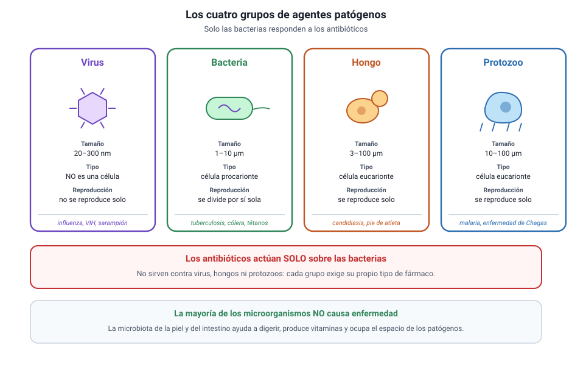
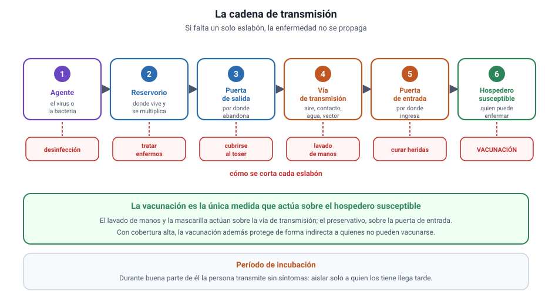
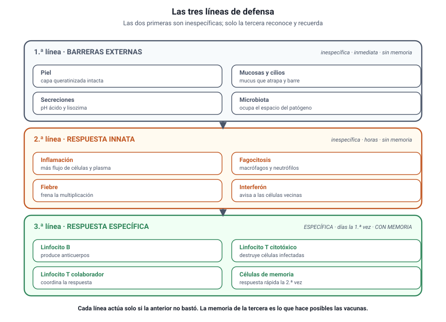
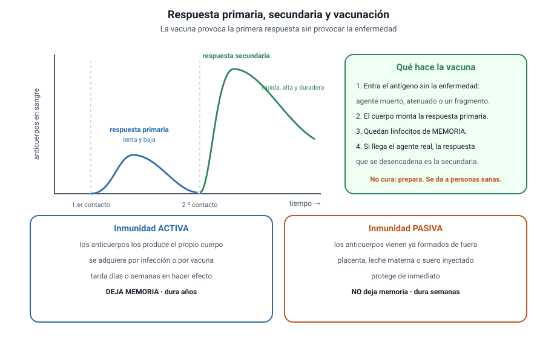

Capítulo 8: Microorganismos y barreras defensivas
Área temática: Procesos y funciones biológicas (ITS) · apoyo
La mayoría de los microorganismos con los que convives no te hacen nada, y una parte importante te hace falta. Solo una minoría causa enfermedad, y frente a ella el cuerpo no está indefenso: tiene una piel que no se deja atravesar, células que patrullan la sangre y una memoria capaz de reconocer un agente al que se enfrentó hace veinte años.
Aquí vas a aprender qué significan salud y enfermedad y qué tipos de enfermedad existen; qué son los virus, las bacterias, los hongos y los protozoos, en qué se diferencian y qué enfermedades causan; cómo se transmite una infección y dónde conviene cortar esa cadena; cuáles son las tres líneas de defensa del organismo y qué hace cada una; cómo funcionan las vacunas y qué es la inmunidad de rebaño; y por qué la resistencia a los antibióticos es hoy un problema de salud pública.
Este capítulo es de apoyo: del temario DEMRE 2027 solo le corresponde el conocimiento 2.5, sobre infecciones de transmisión sexual, y ese contenido se desarrolla en el capítulo 5. Lo que aquí se agrega es el contexto que esas preguntas dan por sabido —qué es un agente patógeno, cómo se transmite y cómo responde el cuerpo— además de dos temas que aparecen con frecuencia como contexto de preguntas de habilidades: las vacunas y la resistencia bacteriana.
1. Conceptos claveIA:12
Antes de entrar en materia, estos son los términos que se usan en todo el capítulo. Vuelve a esta tabla cada vez que uno de ellos aparezca y no lo tengas claro.
| Concepto | Qué significa |
|---|---|
| Salud | Estado de bienestar físico, mental y social, y no solo la ausencia de enfermedad |
| Enfermedad infecciosa | La que causa un agente biológico capaz de transmitirse |
| Enfermedad no infecciosa | La que no se transmite: genética, degenerativa, carencial o ambiental |
| Agente patógeno | Organismo o partícula capaz de causar enfermedad |
| Microorganismo | Ser vivo microscópico: bacteria, arquea, protozoo, alga unicelular o levadura |
| Virus | Partícula con material genético y cubierta proteica; no es una célula |
| Bacteria | Célula procarionte; algunas patógenas, muchas inofensivas o beneficiosas |
| Hongo | Eucarionte heterótrofo con pared celular; unicelular o pluricelular |
| Protozoo | Eucarionte unicelular heterótrofo, como el que causa la malaria |
| Microbiota | Conjunto de microorganismos que viven normalmente en el cuerpo sin causar daño |
| Infección | Entrada y multiplicación de un agente patógeno en el organismo |
| Vía de transmisión | Camino por el que el agente pasa de un hospedero a otro |
| Vector | Animal que transporta el agente de un hospedero a otro, como un mosquito |
| Reservorio | Lugar u organismo donde el agente sobrevive y se multiplica |
| Período de incubación | Tiempo entre la infección y la aparición de los síntomas |
| Barrera primaria | Primera línea: piel, mucosas, secreciones y microbiota |
| Barrera secundaria | Segunda línea: inflamación, fagocitosis, fiebre e interferón |
| Fagocitosis | Proceso por el cual una célula engulle y degrada una partícula o un microorganismo |
| Inflamación | Respuesta local con enrojecimiento, calor, hinchazón y dolor |
| Barrera terciaria | Tercera línea: respuesta inmune específica con linfocitos |
| Antígeno | Molécula que el sistema inmune reconoce como ajena |
| Anticuerpo | Proteína producida por linfocitos B que se une específicamente a un antígeno |
| Linfocito B | Célula que produce anticuerpos |
| Linfocito T | Célula que destruye células infectadas o coordina la respuesta |
| Memoria inmunológica | Capacidad de responder más rápido y con más fuerza a un segundo contacto |
| Respuesta primaria | La del primer contacto: lenta y de baja intensidad |
| Respuesta secundaria | La de contactos posteriores: rápida e intensa |
| Vacuna | Preparación que genera memoria inmunológica sin causar la enfermedad |
| Inmunidad activa | La que el propio organismo genera, por infección o por vacuna |
| Inmunidad pasiva | La que se recibe ya formada, por la placenta, la leche materna o un suero |
| Inmunidad de rebaño | Protección indirecta de los no inmunes cuando una alta proporción de la población lo es |
| Antibiótico | Sustancia que mata bacterias o impide su multiplicación; no actúa sobre virus |
| Resistencia bacteriana | Capacidad de una población bacteriana de sobrevivir a un antibiótico |
2. Salud y enfermedadIA:34
a. Qué es estar sanoIA:567
La definición que se usa desde 1948 es amplia a propósito: salud es un estado de bienestar físico, mental y social, y no solamente la ausencia de enfermedad. Esa formulación tiene dos consecuencias importantes. La primera es que una persona puede no tener ninguna enfermedad diagnosticada y aun así no estar sana. La segunda es que la salud depende de condiciones que exceden al individuo: vivienda, alimentación, trabajo, acceso al agua potable.
Por qué la definición importa en la prueba. Un enunciado puede presentar dos poblaciones con la misma tasa de enfermedad y distinto nivel de bienestar. Si una alternativa afirma que ambas están igualmente sanas «porque nadie está enfermo», está usando la definición estrecha y es incorrecta.
b. Los dos grandes tipos de enfermedadIA:8910
| Infecciosas | No infecciosas | |
|---|---|---|
| Causa | Un agente biológico: virus, bacteria, hongo, protozoo o parásito | Genética, degenerativa, carencial, ambiental o del estilo de vida |
| ¿Se transmiten? | Sí, de un organismo a otro | No |
| Ejemplos | Influenza, tuberculosis, VIH, malaria | Diabetes tipo 1, artrosis, escorbuto, asma ocupacional |
| Prevención típica | Higiene, vacunas, control de vectores | Alimentación, actividad física, control ambiental |
Cómo se pregunta. Es un error frecuente llamar «contagiosa» a cualquier enfermedad frecuente. La diabetes y el cáncer son muy comunes y no se transmiten. La pregunta suele presentar una lista mixta y pedir que separes los dos grupos.
c. Factores de riesgo y prevenciónIA:111213
Un factor de riesgo es una condición que aumenta la probabilidad de desarrollar una enfermedad, sin garantizar que ocurra. Fumar aumenta el riesgo de cáncer pulmonar, pero hay fumadores que no lo desarrollan y no fumadores que sí.
La prevención se organiza en tres niveles:
- Primaria: evitar que la enfermedad aparezca. Vacunación, agua potable, uso de preservativo.
- Secundaria: detectarla temprano, cuando aún no da síntomas. Exámenes de detección.
- Terciaria: reducir el daño y las secuelas en quien ya está enfermo. Rehabilitación, tratamiento.
Riesgo no es causa. Un factor de riesgo cambia una probabilidad. Que una alternativa diga «quien fuma desarrollará cáncer» es un sobre-alcance: la relación es estadística, no determinista. Ese matiz se pregunta con regularidad.
3. Los microorganismosIA:1415

a. La mayoría no causa dañoIA:161718
Antes de hablar de patógenos conviene fijar una proporción: de los millones de especies microbianas conocidas, solo una minoría produce enfermedad en humanos. En tu intestino, tu piel y tus mucosas vive la microbiota, un conjunto enorme de microorganismos que ayudan a digerir, producen vitaminas y ocupan el espacio que de otro modo usarían los patógenos.
La microbiota es una barrera. Cuando un tratamiento con antibióticos la altera, aparecen infecciones oportunistas que antes no ocurrían. Esa es una de las razones por las que los antibióticos no deben tomarse sin necesidad.
b. Los cuatro grupos que hay que distinguirIA:192021
| Virus | Bacterias | Hongos | Protozoos | |
|---|---|---|---|---|
| ¿Es una célula? | No | Sí, procarionte | Sí, eucarionte | Sí, eucarionte |
| Tamaño típico | 20 a 300 nm | 1 a 10 µm | 3 a 100 µm | 10 a 100 µm |
| Metabolismo propio | No | Sí | Sí | Sí |
| Se reproduce solo | No: necesita una célula hospedera | Sí, por división | Sí | Sí |
| ¿Responden a antibióticos? | No | Sí | No (requieren antifúngicos) | No (requieren antiparasitarios) |
| Ejemplos de enfermedad | Influenza, VIH, sarampión, COVID-19 | Tuberculosis, cólera, tétanos | Candidiasis, pie de atleta | Malaria, enfermedad de Chagas |
Cómo se pregunta. Dos datos deciden la mayoría de los ítems de esta sección: que el virus no es una célula y no tiene metabolismo propio, y que los antibióticos no sirven contra los virus. Una alternativa que recete antibióticos para un resfrío es siempre incorrecta.
c. Por qué el virus es un caso aparteIA:222324
Un virus tiene material genético, ADN o ARN, y una cubierta de proteínas; algunos añaden una envoltura lipídica. No tiene citoplasma con metabolismo, ni ribosomas propios, ni capacidad de dividirse. Fuera de una célula es una partícula inerte.
Para multiplicarse debe entrar en una célula hospedera y usar su maquinaria: sus ribosomas, sus enzimas y su energía. Por eso las enfermedades virales se combaten sobre todo previniéndolas, con vacunas, y por eso los pocos antivirales existentes son difíciles de diseñar: hay que golpear al virus sin dañar la célula que lo aloja.
d. Bacterias: no todas son enemigasIA:252627
Las bacterias son células procariontes. Algunas causan enfermedades graves, pero muchas otras son indispensables: fijan nitrógeno en el suelo, fermentan alimentos, sintetizan vitamina K en el intestino y participan en el ciclo del carbono, como viste en el capítulo 10.
Las bacterias patógenas dañan de dos maneras: invadiendo tejidos y multiplicándose en ellos, o liberando toxinas. El tétanos y el botulismo son ejemplos del segundo caso: el daño lo hace la toxina, no la bacteria en sí.
4. Transmisión y prevenciónIA:2829

a. La cadena de transmisiónIA:303132
Para que una enfermedad infecciosa se propague deben cumplirse seis condiciones encadenadas. Si falta una sola, la transmisión se interrumpe.
| Eslabón | Qué es | Cómo se corta |
|---|---|---|
| Agente | El virus, la bacteria u otro patógeno | Desinfección, esterilización, antibióticos |
| Reservorio | Donde el agente vive y se multiplica | Tratamiento de enfermos, control de animales |
| Puerta de salida | Por donde abandona al hospedero | Cubrirse al toser, aislar secreciones |
| Vía de transmisión | El camino de un hospedero a otro | Lavado de manos, mascarilla, agua potable, control de vectores |
| Puerta de entrada | Por donde ingresa al nuevo hospedero | Curar heridas, preservativo, no compartir jeringas |
| Hospedero susceptible | La persona que puede enfermar | Vacunación |
Cómo se pregunta. La PAES suele describir una medida sanitaria y pedir qué eslabón interrumpe. La vacunación es el único que actúa sobre el hospedero susceptible; el lavado de manos y la mascarilla actúan sobre la vía de transmisión.
b. Las vías de transmisiónIA:333435
| Vía | Cómo ocurre | Ejemplos |
|---|---|---|
| Aérea | Gotitas o aerosoles al toser, hablar o estornudar | Influenza, tuberculosis, sarampión |
| Por contacto | Directo con la piel o las mucosas, o con un objeto contaminado | Herpes, hongos de la piel |
| Sexual | Contacto con fluidos durante relaciones sexuales | VIH, gonorrea, clamidia, sífilis |
| Digestiva | Agua o alimentos contaminados con heces | Cólera, hepatitis A, fiebre tifoidea |
| Vertical | De la madre al hijo en el embarazo, el parto o la lactancia | VIH, sífilis congénita |
| Por vector | Un animal transporta el agente | Malaria por mosquito, Chagas por vinchuca |
| Parenteral | Por sangre: jeringas, transfusiones, instrumentos | VIH, hepatitis B y C |
Las infecciones de transmisión sexual se desarrollan en detalle en el capítulo 5, que es donde el temario 2027 las ubica.
c. Período de incubación y por qué complica el controlIA:363738
El período de incubación es el tiempo entre la infección y la aparición de los síntomas. Durante buena parte de él la persona puede transmitir el agente sin saber que está infectada. Por eso las medidas basadas solo en aislar a quienes tienen síntomas son insuficientes: llegan tarde.
Un caso para razonar. Dos enfermedades tienen la misma vía de transmisión y la misma probabilidad de contagio por contacto, pero una tiene un período de incubación de un día y la otra de dos semanas. La segunda es más difícil de controlar, porque cada persona infectada circula y transmite durante mucho más tiempo antes de ser detectada. La conclusión no depende de cuán grave sea la enfermedad, sino del tiempo disponible para transmitirla.
d. Prevención: lo que de verdad funcionaIA:394041
- Agua potable y alcantarillado. Es la medida que más muertes por enfermedades infecciosas ha evitado en la historia.
- Lavado de manos. Corta la vía de contacto y la digestiva.
- Vacunación. Actúa sobre el hospedero y, con cobertura alta, protege también a quien no puede vacunarse.
- Control de vectores. Eliminar criaderos de mosquitos o mejorar las viviendas rurales.
- Preservativo. Corta la puerta de entrada en la vía sexual.
- Manipulación segura de alimentos. Cocción, refrigeración y separación de crudos y cocidos.
5. Las barreras defensivasIA:4243

a. Tres líneas, no unaIA:444546
El organismo no tiene una defensa, sino tres, dispuestas en profundidad. Las dos primeras son inespecíficas: actúan igual contra cualquier invasor. La tercera es específica: reconoce a cada agente en particular y lo recuerda.
| Primera línea | Segunda línea | Tercera línea | |
|---|---|---|---|
| Qué es | Barreras externas | Respuesta innata interna | Respuesta inmune específica |
| ¿Específica? | No | No | Sí |
| ¿Hay memoria? | No | No | Sí |
| Velocidad | Inmediata | Horas | Días la primera vez |
| Componentes | Piel, mucosas, secreciones, microbiota | Inflamación, fagocitosis, fiebre, interferón | Linfocitos B y T, anticuerpos |
b. Primera línea: no dejar entrarIA:474849
- Piel: una capa de células muertas y queratinizadas que ningún patógeno común atraviesa si está intacta.
- Mucosas: recubren las vías respiratoria, digestiva y urogenital, y producen mucus que atrapa partículas.
- Cilios: en las vías respiratorias, barren el mucus con lo atrapado hacia afuera.
- Secreciones: el sudor y el sebo tienen pH ácido; las lágrimas y la saliva contienen lisozima, una enzima que destruye la pared de muchas bacterias; el jugo gástrico es fuertemente ácido.
- Microbiota: ocupa el espacio y los nutrientes que un patógeno necesitaría.
Una herida es una puerta. Casi todas las infecciones de piel empiezan con una solución de continuidad: un corte, una quemadura, una picadura. Por eso cubrir y limpiar una herida es una medida de defensa de primera línea, no un detalle estético.
c. Segunda línea: contener al que entróIA:505152
Si el patógeno atraviesa la barrera externa, se activa la respuesta innata:
- Inflamación. Los vasos de la zona se dilatan y se vuelven más permeables. De ahí el enrojecimiento, el calor, la hinchazón y el dolor. La dilatación sirve: lleva más células defensivas y más plasma al lugar.
- Fagocitosis. Los macrófagos y los neutrófilos engullen al microorganismo y lo degradan en su interior. El pus es, en buena medida, el resultado de ese trabajo.
- Fiebre. El aumento de la temperatura dificulta la multiplicación de muchos patógenos y acelera las reacciones defensivas.
- Interferón. Proteínas que una célula infectada por un virus libera para avisar a sus vecinas, que se preparan y dificultan la replicación viral.
Cómo se pregunta. La fiebre y la inflamación son respuestas del organismo, no efectos directos del patógeno. Una alternativa que diga que «la bacteria provoca la hinchazón» confunde la causa con la reacción. Y bajar la fiebre alivia, pero no combate la infección.
d. Tercera línea: reconocer y recordarIA:535455
La respuesta específica se dirige contra un antígeno determinado y deja memoria.
- Linfocitos B. Producen anticuerpos, proteínas que se unen al antígeno con gran precisión, lo neutralizan y lo marcan para que sea fagocitado.
- Linfocitos T citotóxicos. Destruyen las células propias que están infectadas por un virus.
- Linfocitos T colaboradores. Coordinan a los demás. Son las células que el VIH destruye, y por eso esa infección desarma toda la respuesta.
- Linfocitos de memoria. Quedan tras el primer contacto y permiten una respuesta mucho más rápida en el segundo.
Específica significa específica. Los anticuerpos contra el sarampión no sirven contra la influenza. Esa es la razón de que existan vacunas distintas para enfermedades distintas, y de que haber tenido una infección no proteja frente a otra.
6. Vacunas e inmunidadIA:5657

a. Respuesta primaria y respuesta secundariaIA:585960
La diferencia entre ambas es el fundamento de toda la vacunación.
| Respuesta primaria | Respuesta secundaria | |
|---|---|---|
| Cuándo ocurre | En el primer contacto con el antígeno | En contactos posteriores |
| Tiempo hasta hacer efecto | Días: hay que seleccionar y multiplicar los linfocitos | Horas o pocos días |
| Cantidad de anticuerpos | Baja | Mucho mayor |
| Duración | Corta | Prolongada |
| Por qué | Se parte desde cero | Existen linfocitos de memoria |
Cómo se pregunta. Un gráfico muestra dos picos de anticuerpos frente al tiempo: uno pequeño y tardío, otro alto y rápido. Lo que se pide es identificar cuál corresponde al segundo contacto y explicar por qué. La respuesta es la memoria inmunológica, no que «el cuerpo se acostumbró» ni que «el patógeno se debilitó».
b. Qué es una vacunaIA:616263
Una vacuna introduce el antígeno sin la enfermedad: un agente muerto, uno atenuado, un fragmento de él, o la instrucción para que la propia célula fabrique ese fragmento. El sistema inmune monta una respuesta primaria y deja linfocitos de memoria. Cuando después llega el agente real, la respuesta que se desencadena es la secundaria: rápida y potente.
La vacuna no es un antibiótico ni un tratamiento. No mata al agente ni cura a quien ya está enfermo: prepara al organismo antes. Por eso es una medida de prevención primaria, y por eso se administra a personas sanas.
c. Activa y pasivaIA:646566
| Activa | Pasiva | |
|---|---|---|
| Quién produce los anticuerpos | El propio organismo | Otro organismo |
| Cómo se adquiere | Infección natural o vacuna | Placenta, leche materna o suero inyectado |
| Tiempo en hacer efecto | Días o semanas | Inmediato |
| ¿Deja memoria? | Sí | No |
| Duración | Años o toda la vida | Semanas o meses |
Cuándo se usa cada una. Ante una mordedura de un animal posiblemente rabioso se administran las dos cosas: un suero con anticuerpos ya formados, que protege de inmediato, y la vacuna, que genera memoria propia. La pasiva cubre el tiempo que la activa necesita para funcionar.
d. Inmunidad de rebañoIA:676869
Cuando una proporción alta de la población es inmune, el agente encuentra pocos hospederos disponibles y la cadena de transmisión se interrumpe. Los no inmunes —recién nacidos, personas con inmunidad comprometida, quienes no pueden vacunarse por razones médicas— quedan protegidos indirectamente.
El umbral depende de lo contagiosa que sea la enfermedad: para el sarampión, muy transmisible, se requieren coberturas por encima del 95 %; para otras, menos. Por eso una caída pequeña de la cobertura puede reactivar una enfermedad que parecía controlada.
La inmunidad de rebaño protege a terceros, no a uno mismo. Ese es exactamente el punto: quien se vacuna reduce su propio riesgo y además deja de ser un eslabón en la cadena. Una alternativa que presente la vacunación como una decisión puramente individual pasa por alto ese efecto.
7. Antibióticos y resistenciaIA:7071
a. Qué hace un antibiótico y qué noIA:727374
Un antibiótico mata bacterias o impide su multiplicación. Actúa sobre estructuras que las bacterias tienen y nuestras células no: la pared celular, sus ribosomas, algunas de sus enzimas. Esa diferencia es la que permite atacarlas sin destruir al paciente.
De ahí se siguen dos consecuencias que la prueba usa con frecuencia:
- No sirve contra virus. Un virus no tiene pared, ni ribosomas propios, ni metabolismo: no hay nada que golpear. Tomar antibióticos para un resfrío o una influenza no acorta la enfermedad.
- Tampoco sirve contra hongos ni protozoos, que son eucariontes y requieren antifúngicos o antiparasitarios.
Cómo se pregunta. Un enunciado describe un cuadro viral tratado con antibióticos y pide evaluar la conducta. Lo que se espera es que señales dos costos: no hay beneficio y sí hay daño, porque se altera la microbiota y se favorece la resistencia.
b. Cómo aparece la resistenciaIA:757677
La resistencia no la produce el antibiótico, y este punto es el que más se equivoca. Lo que ocurre es selección natural, exactamente como en el capítulo 9:
- En una población bacteriana enorme existe variabilidad previa: unas pocas bacterias ya portan, por mutación, una característica que las hace insensibles al antibiótico.
- Al aplicar el antibiótico, las sensibles mueren y las resistentes sobreviven.
- Las sobrevivientes se multiplican sin competencia y, en pocas horas, la población es mayoritariamente resistente.
El error que la PAES persigue. Decir que «la bacteria se hizo resistente para sobrevivir» o que «el antibiótico provocó la mutación» invierte el mecanismo. La mutación es previa y azarosa; el antibiótico solo selecciona. Y la resistencia es una propiedad de la población, no de una bacteria individual que se adapta.
c. Por qué es un problema de salud públicaIA:787980
Las bacterias intercambian material genético entre sí con relativa facilidad, incluso entre especies distintas, de modo que un gen de resistencia puede difundirse rápido. Cuando una infección deja de responder a los antibióticos disponibles, procedimientos hoy rutinarios —una cirugía, una quimioterapia, un parto complicado— vuelven a ser peligrosos.
En Chile, el Ministerio de Salud coordina un Plan Nacional contra la Resistencia a los Antimicrobianos, con participación del Instituto de Salud Pública, del sector agrícola y del acuícola. El enfoque es intersectorial porque el uso de antimicrobianos en animales y en la acuicultura también selecciona bacterias resistentes que pueden llegar a las personas.
d. Qué reduce el problemaIA:818283
- No usar antibióticos sin indicación médica, y menos aún para cuadros virales.
- Completar el tratamiento según lo indicado: interrumpirlo antes de tiempo deja sobrevivientes.
- No reutilizar antibióticos sobrantes ni compartirlos.
- Vacunarse: menos infecciones significan menos tratamientos y menos presión de selección.
- Higiene y control de infecciones en hospitales, donde circulan las cepas más resistentes.
- Uso responsable en producción animal, que es la otra mitad del problema.
Un experimento que se pregunta. Se siembran bacterias en una placa con antibiótico y crecen unas pocas colonias. Si se resiembran esas colonias en una placa nueva con el mismo antibiótico, todas crecen. La conclusión correcta no es que las bacterias «aprendieron», sino que la resistencia es hereditaria y ya estaba presente en las que sobrevivieron a la primera placa.
Ejemplos PAES resueltos
Cuatro ítems al estilo de la prueba, resueltos paso a paso. Cúbrelos primero y después compara.
Ejemplo 1 (Procesar y analizar la evidencia). Se cultivan bacterias en una placa con un antibiótico y crecen tres colonias aisladas. Esas colonias se resiembran en una placa nueva con el mismo antibiótico y crecen todas. Los resultados se resumen así:
| Placa | Tratamiento | Colonias que crecen |
|---|---|---|
| 1 | Cultivo original con antibiótico | 3 de aproximadamente 10 millones |
| 2 | Resiembra de esas 3 colonias, con antibiótico | Todas |
| 3 | Resiembra de bacterias de la placa 2, con antibiótico | Todas |
¿Qué conclusión se desprende correctamente de estos datos?
A) El antibiótico provocó una mutación que hizo resistentes a las bacterias. B) Las bacterias aprendieron a sobrevivir al estar expuestas al antibiótico. C) La resistencia ya existía en unas pocas bacterias y es hereditaria. D) El antibiótico perdió su efecto con el paso del tiempo en el cultivo.
Desarrollo. Hay que leer los tres datos juntos.
- En la placa 1 crecen 3 de 10 millones. Esa proporción mínima indica que la resistencia era rara y preexistente: si el antibiótico la generara, habría aparecido en muchas más.
- En las placas 2 y 3 crecen todas. La descendencia de las resistentes es resistente: la característica se hereda. Eso descarta B, porque «aprender» no se transmite a la descendencia.
- El antibiótico sigue funcionando, y la prueba es que en la placa 1 mató a casi todo. D es falsa.
- A invierte el mecanismo: la mutación es previa y azarosa, y el antibiótico solo selecciona a las que ya la tenían.
Clave: C.
Lo que evalúa. Distinguir selección de inducción. Es el mismo razonamiento de la selección natural del capítulo 9, aplicado a una población bacteriana.
Ejemplo 2 (Evaluar). Una persona con un cuadro respiratorio de origen viral toma un antibiótico por su cuenta y, cinco días después, se siente mejor. Concluye que el antibiótico la curó.
¿Cuál es la principal limitación de esa conclusión?
A) Ninguna: la mejoría después del tratamiento demuestra que fue eficaz. B) La mejoría pudo deberse al curso natural de la infección viral, que el antibiótico no combate. C) El antibiótico habría funcionado mejor con una dosis mayor desde el inicio. D) La conclusión es incorrecta porque los antibióticos empeoran siempre los cuadros virales.
Desarrollo. El problema es de diseño, no de farmacología.
- No hay grupo de comparación. La persona mejoró, pero no se sabe qué habría pasado sin el antibiótico. La mayoría de los cuadros virales respiratorios se resuelven solos en pocos días.
- El antibiótico no actúa sobre virus. Un virus no tiene pared celular, ni ribosomas propios, ni metabolismo: no hay diana que atacar.
- C acepta la premisa equivocada y discute la dosis, cuando el problema es que el fármaco no corresponde.
- D exagera: los antibióticos no «empeoran siempre» el cuadro. Lo que sí producen es daño a la microbiota y presión de selección hacia la resistencia, que es un costo real pero distinto.
Clave: B.
Lo que evalúa. Reconocer una inferencia causal sin control y recordar sobre qué grupo de agentes actúan los antibióticos.
Ejemplo 3 (Procesar y analizar la evidencia). El gráfico de un estudio muestra la concentración de anticuerpos en sangre frente al tiempo. Tras el primer contacto con un antígeno, la concentración sube lentamente hasta un valor bajo y luego decae. Tras un segundo contacto con el mismo antígeno, sube en pocos días hasta un valor diez veces mayor y se mantiene.
¿Qué explica la diferencia entre ambas respuestas?
A) El antígeno del segundo contacto era más potente que el del primero. B) El organismo conserva linfocitos de memoria del primer contacto. C) El sistema inmune se acostumbró al antígeno y reaccionó menos. D) El antígeno se debilitó entre el primer y el segundo contacto.
Desarrollo. El enunciado dice explícitamente que el antígeno es el mismo, así que la explicación tiene que estar en el organismo.
- Primer contacto: hay que seleccionar y multiplicar los linfocitos que reconocen ese antígeno. Eso toma días y produce poca cantidad de anticuerpos.
- Segundo contacto: ya existen linfocitos de memoria específicos, listos para dividirse. La respuesta es rápida, alta y duradera.
- A y D contradicen el enunciado, que fija el antígeno como constante.
- C invierte el resultado: la respuesta fue mayor, no menor.
Clave: B. Este es exactamente el principio en que se basan las vacunas.
Lo que evalúa. Leer dos curvas y atribuir la diferencia a la variable que cambió, que aquí es el estado del organismo y no el antígeno.
Ejemplo 4 (Planificar y conducir una investigación). Un equipo quiere determinar si una nueva vacuna reduce la incidencia de una enfermedad respiratoria. Dispone de 4000 voluntarios adultos sanos de una misma ciudad.
¿Cuál de los siguientes diseños permite responder mejor la pregunta?
A) Vacunar a los 4000 voluntarios y registrar cuántos enferman durante un año. B) Vacunar a 2000 voluntarios asignados al azar y administrar un placebo a los otros 2000, y comparar la incidencia durante un año. C) Vacunar a los 2000 voluntarios de mayor edad y dejar sin vacunar a los 2000 más jóvenes. D) Vacunar a 2000 voluntarios y comparar su incidencia con la del año anterior en toda la ciudad.
Desarrollo. Tres requisitos deciden el caso.
- Dos grupos comparables. A tiene un solo grupo: no hay con qué comparar.
- Asignación al azar. C separa por edad, que es un factor de riesgo conocido para las enfermedades respiratorias. Si al final hay diferencia, no se sabría si la causó la vacuna o la edad: es una variable confundida.
- Mismas condiciones de exposición. D compara con un año distinto, en el que la circulación del agente, el clima y las medidas sanitarias pudieron ser otros. No es un control válido.
Solo B cumple las tres. El placebo, además, permite que ni los participantes ni quienes registran los casos sepan quién recibió qué.
Clave: B.
Lo que evalúa. Reconocer un ensayo controlado y aleatorizado, y detectar la variable confundida de la alternativa C, que es la más tentadora porque sí tiene dos grupos.
Evaluación formativa
Veinte preguntas sobre salud y enfermedad, microorganismos, transmisión, barreras defensivas, vacunas y resistencia a los antibióticos. Responde todas y luego revisa las explicaciones.
1. ¿Cuál de las siguientes enfermedades NO es infecciosa?
- La tuberculosis.
- La malaria.
- La diabetes tipo 1.
- La influenza.
Respuesta correcta: C
La diabetes tipo 1 tiene un origen autoinmune y no se transmite de una persona a otra. Las otras tres las causan agentes biológicos: una bacteria, un protozoo y un virus. Que una enfermedad sea muy frecuente no la convierte en contagiosa.
2. Se afirma que fumar es un factor de riesgo del cáncer pulmonar. ¿Qué significa exactamente esa afirmación?
- Que toda persona que fuma desarrollará cáncer pulmonar.
- Que fumar aumenta la probabilidad de desarrollarlo, sin garantizar que ocurra.
- Que el cáncer pulmonar solo aparece en personas fumadoras.
- Que dejar de fumar elimina por completo cualquier riesgo previo.
Respuesta correcta: B
Un factor de riesgo modifica una probabilidad: la relación es estadística, no determinista. Hay fumadores que no desarrollan la enfermedad y no fumadores que sí. Las alternativas A y C convierten una probabilidad en una certeza, que es el error que la prueba busca.
3. La vacunación forma parte de la prevención primaria. ¿Qué caracteriza a ese nivel de prevención?
- Reducir las secuelas en quien ya presenta la enfermedad.
- Detectar la enfermedad antes de que aparezcan los síntomas.
- Rehabilitar a quien quedó con una discapacidad tras enfermar.
- Evitar que la enfermedad llegue a producirse.
Respuesta correcta: D
La prevención primaria actúa antes de que la enfermedad exista, como el agua potable, el preservativo o las vacunas. La detección temprana es prevención secundaria, y reducir daño y secuelas en quien ya enfermó es prevención terciaria.
4. ¿Cuál es la diferencia fundamental entre un virus y una bacteria?
- El virus no es una célula y carece de metabolismo propio.
- El virus es una célula eucarionte y la bacteria, procarionte.
- El virus carece de material genético y la bacteria lo posee.
- El virus es mucho más grande que cualquier bacteria conocida.
Respuesta correcta: A
Un virus tiene material genético y cubierta proteica, pero no citoplasma con metabolismo ni ribosomas propios, de modo que necesita una célula hospedera para multiplicarse. Es además mucho más pequeño que una bacteria: nanómetros frente a micrómetros.
5. ¿Por qué los antibióticos no sirven para tratar una infección viral?
- Porque los virus se reproducen demasiado rápido para el fármaco.
- Porque los virus se esconden en el interior del núcleo celular.
- Porque los antibióticos actúan sobre estructuras bacterianas que el virus no tiene.
- Porque los antibióticos se destruyen antes de alcanzar al virus.
Respuesta correcta: C
Los antibióticos atacan la pared celular, los ribosomas bacterianos o enzimas propias de las bacterias. Un virus no tiene ninguna de esas estructuras, de modo que no hay diana sobre la cual actuar. Tomarlos igual no acorta el cuadro y sí favorece la resistencia.
6. ¿Qué papel cumple la microbiota intestinal en la defensa del organismo?
- Produce anticuerpos específicos contra los patógenos.
- Ocupa el espacio y los nutrientes que necesitarían los patógenos.
- Destruye las células del propio intestino que están infectadas.
- Genera memoria inmunológica frente a infecciones futuras.
Respuesta correcta: B
La microbiota es parte de la primera línea de defensa por competencia: ocupa el nicho. Los anticuerpos los producen los linfocitos B, la destrucción de células infectadas corresponde a los linfocitos T citotóxicos y la memoria es propia de la tercera línea.
7. La enfermedad de Chagas se transmite mediante una vinchuca que lleva el agente de un hospedero a otro. ¿Cómo se denomina ese animal?
- Reservorio de la enfermedad.
- Hospedero susceptible.
- Agente patógeno responsable.
- Vector de la enfermedad.
Respuesta correcta: D
Un vector transporta el agente entre hospederos. El agente patógeno del Chagas es un protozoo, el reservorio es el lugar u organismo donde el agente se mantiene y el hospedero susceptible es quien puede enfermar. Controlar el vector es la medida central de prevención.
8. ¿Sobre qué eslabón de la cadena de transmisión actúa la vacunación?
- Sobre el hospedero susceptible.
- Sobre la vía de transmisión.
- Sobre el reservorio del agente.
- Sobre la puerta de salida del agente.
Respuesta correcta: A
La vacuna hace que la persona deje de ser susceptible. El lavado de manos y la mascarilla actúan sobre la vía de transmisión, tratar a los enfermos actúa sobre el reservorio y cubrirse al toser, sobre la puerta de salida.
9. Dos enfermedades tienen la misma vía de transmisión y la misma probabilidad de contagio por contacto, pero una tiene un período de incubación de un día y la otra de dos semanas. ¿Cuál es más difícil de controlar y por qué?
- La de un día, porque los síntomas aparecen antes de poder aislar al enfermo.
- Ninguna: el período de incubación no influye en el control.
- La de dos semanas, porque la persona transmite más tiempo sin saber que está infectada.
- La de dos semanas, porque el agente se vuelve más virulento con el tiempo.
Respuesta correcta: C
Durante la incubación puede haber transmisión sin síntomas, de modo que una incubación larga da mucho más tiempo para contagiar antes de ser detectado. La virulencia no cambia por la duración del período, y aislar solo a quienes tienen síntomas llega tarde en ese escenario.
10. ¿Cuál de los siguientes elementos pertenece a la primera línea de defensa?
- La fagocitosis realizada por los macrófagos.
- La lisozima presente en las lágrimas y la saliva.
- Los anticuerpos producidos por los linfocitos B.
- Los linfocitos de memoria que quedan tras una infección.
Respuesta correcta: B
La lisozima es una barrera química externa que destruye la pared de muchas bacterias antes de que entren. La fagocitosis pertenece a la segunda línea, y los anticuerpos y las células de memoria, a la tercera.
11. El enrojecimiento, el calor, la hinchazón y el dolor de una herida infectada corresponden a
- un efecto tóxico directo de la bacteria sobre el tejido.
- una respuesta específica mediada por anticuerpos.
- una reacción alérgica frente al agente infeccioso.
- la inflamación, una respuesta inespecífica del organismo.
Respuesta correcta: D
La inflamación la produce el propio organismo: los vasos se dilatan y se vuelven más permeables para llevar más células defensivas y más plasma a la zona. No es un daño causado directamente por el microorganismo, y no es específica ni requiere contacto previo.
12. ¿Qué función cumple el interferón en la defensa antiviral?
- Avisar a las células vecinas para que dificulten la replicación viral.
- Unirse al virus con gran especificidad y neutralizarlo.
- Engullir y degradar a las partículas virales en el citoplasma.
- Generar memoria frente a futuras infecciones por el mismo virus.
Respuesta correcta: A
Una célula infectada libera interferón y las vecinas se preparan, lo que retrasa la propagación del virus. La unión específica es tarea de los anticuerpos, la ingestión corresponde a la fagocitosis y la memoria, a los linfocitos de la tercera línea.
13. ¿Qué célula destruye directamente a las células propias que están infectadas por un virus?
- El linfocito B.
- El macrófago de los tejidos.
- El linfocito T colaborador.
- El linfocito T citotóxico.
Respuesta correcta: D
El linfocito T citotóxico reconoce la célula infectada y la elimina, cortando la fábrica de virus. El linfocito B produce anticuerpos, el macrófago fagocita partículas y restos, y el linfocito T colaborador coordina a los demás sin destruir células.
14. El VIH destruye preferentemente a los linfocitos T colaboradores. ¿Qué consecuencia tiene eso?
- Se pierde únicamente la capacidad de producir anticuerpos.
- Se desorganiza toda la respuesta inmune específica.
- Se pierde solo la primera línea de defensa del organismo.
- Se refuerza la respuesta inflamatoria de forma permanente.
Respuesta correcta: B
Los linfocitos T colaboradores coordinan tanto a los linfocitos B como a los T citotóxicos, de modo que su pérdida afecta a toda la respuesta específica. Por eso aparecen infecciones oportunistas por agentes que normalmente no causarían enfermedad.
15. ¿Por qué la respuesta secundaria es más rápida e intensa que la primaria?
- Porque existen linfocitos de memoria específicos del primer contacto.
- Porque el antígeno del segundo contacto es siempre más débil.
- Porque la primera línea de defensa se refuerza con el tiempo.
- Porque el organismo produce anticuerpos inespecíficos de reserva.
Respuesta correcta: A
Tras el primer contacto quedan linfocitos ya seleccionados y listos para dividirse, lo que ahorra los días que exige la respuesta primaria. El antígeno es el mismo, la primera línea no interviene en esto y los anticuerpos son siempre específicos.
16. ¿Qué hace una vacuna?
- Mata al agente patógeno que ya se encuentra en el organismo.
- Aporta anticuerpos ya formados que protegen de inmediato.
- Refuerza de manera inespecífica todas las defensas del cuerpo.
- Introduce el antígeno sin la enfermedad y genera memoria inmunológica.
Respuesta correcta: D
La vacuna provoca una respuesta primaria y deja linfocitos de memoria, de modo que el encuentro real con el agente desencadena una respuesta secundaria. No cura ni mata al agente, y aportar anticuerpos ya formados corresponde a la inmunidad pasiva, no a una vacuna.
17. Un recién nacido recibe anticuerpos de su madre a través de la placenta y la leche materna. ¿Qué tipo de inmunidad es esa?
- Activa, porque el niño produce sus propios anticuerpos.
- Activa, porque la protección dura toda la vida.
- Pasiva, porque recibe anticuerpos ya formados y no deja memoria.
- Pasiva, porque el niño genera linfocitos de memoria propios.
Respuesta correcta: C
La inmunidad pasiva protege de inmediato, pero se agota en semanas o meses y no deja memoria, porque el organismo no montó la respuesta. Por eso el calendario de vacunación comienza temprano: hay que generar inmunidad activa antes de que la pasiva desaparezca.
18. ¿En qué consiste la inmunidad de rebaño?
- En que las personas vacunadas dejan de necesitar otras medidas de higiene.
- En que, con una proporción alta de inmunes, el agente casi no encuentra a quién infectar.
- En que la vacuna administrada a un grupo protege genéticamente a sus hijos.
- En que las personas no vacunadas desarrollan inmunidad por convivir con vacunadas.
Respuesta correcta: B
Al reducirse el número de hospederos susceptibles, la cadena de transmisión se interrumpe y quienes no pueden vacunarse quedan protegidos de forma indirecta. No se transmite inmunidad por convivencia ni por herencia: el efecto es epidemiológico, no biológico individual.
19. ¿Cómo aparece la resistencia a un antibiótico en una población bacteriana?
- Unas pocas bacterias ya la poseen por mutación previa y el antibiótico las selecciona.
- El antibiótico induce en cada bacteria la mutación que la vuelve resistente.
- Las bacterias deciden modificar su metabolismo para poder sobrevivir.
- Las bacterias resistentes provienen siempre de otra especie bacteriana.
Respuesta correcta: A
La variabilidad es previa y azarosa: el antibiótico no crea la resistencia, solo elimina a las sensibles y deja que las resistentes se multipliquen sin competencia. Es selección natural, el mismo mecanismo del capítulo 9, y la resistencia es una propiedad de la población, no una decisión individual.
20. ¿Cuál de las siguientes conductas reduce la aparición de resistencia bacteriana?
- Interrumpir el tratamiento apenas desaparecen los síntomas.
- Guardar los antibióticos sobrantes para un próximo resfrío.
- Usar antibióticos solo con indicación médica y completar el tratamiento.
- Aumentar la dosis por cuenta propia para asegurar el efecto.
Respuesta correcta: C
Menos exposición innecesaria significa menos presión de selección, y completar el tratamiento evita dejar sobrevivientes que reinicien la población. Guardar sobrantes para un resfrío es doblemente inadecuado, porque además el resfrío es viral. Chile cuenta con un Plan Nacional contra la Resistencia a los Antimicrobianos orientado a estas medidas.
Fuentes del capítulo
Consultadas el 24 de septiembre de 2026. El texto es de redacción propia y los cuatro diagramas son originales.
Documentos oficiales
- DEMRE (2026). Temario Regular – Pruebas Electivas – Ciencias. Admisión 2027. Del contenido de este capítulo, el temario solo incluye el conocimiento 2.5, sobre infecciones de transmisión sexual, que se desarrolla en el capítulo 5. El resto es apoyo.
- DEMRE (2026). Prueba oficial PAES de Invierno, Ciencias – Biología, Admisión 2027, y su clavijero. Se revisó para confirmar cómo aparecen los microorganismos y las defensas como contexto de preguntas de habilidades, sin reproducir ítems.
- Ministerio de Salud de Chile. Plan Nacional contra la Resistencia a los Antimicrobianos, Chile 2021–2025. Coordinación intersectorial entre Salud, Educación, Agricultura, Economía, Ciencia y Medio Ambiente; papel del Instituto de Salud Pública, del SAG, de Sernapesca y de ACHIPIA. diprece.minsal.cl
- Organización Panamericana de la Salud. Lanzamiento del Plan Nacional contra la Resistencia a los Antimicrobianos en Chile: contexto del consumo de antimicrobianos en el país y prescripción innecesaria. paho.org
- Ministerio de Salud de Chile. Programa Nacional de Inmunizaciones: calendario de vacunación vigente y fundamentos de la vacunación poblacional. minsal.cl
Salud, enfermedad y transmisión
- Organización Mundial de la Salud. Definición de salud como estado de completo bienestar físico, mental y social, contenida en el preámbulo de su Constitución de 1948. who.int
- MedlinePlus en español, Biblioteca Nacional de Medicina de Estados Unidos. Respuesta inmunitaria: líneas de defensa, inmunidad innata y adaptativa, inmunidad activa y pasiva. medlineplus.gov
Barreras defensivas e inmunidad
- Universidad de Valencia. Inmunología: generalidades. La respuesta inmune innata y la adaptativa, material docente: barreras físicas y químicas, inflamación, fagocitosis y memoria inmunológica. uv.es
- Kuby. Inmunología, 8.ª edición, capítulo sobre inmunidad innata: barreras tisulares, receptores de reconocimiento y respuesta inflamatoria. Consultado en AccessMedicina. accessmedicina.mhmedical.com
- OpenStax. Biology 2e, capítulo sobre el sistema inmune: respuesta primaria y secundaria, linfocitos B y T, y base inmunológica de la vacunación. openstax.org
Libro de consulta
- Hoefnagels, M. Biology: Concepts and Investigations, 5.ª edición, capítulos sobre microorganismos e inmunidad. Consulta de referencia; el texto de este capítulo es de redacción propia.
Preguntas de práctica (IA)
Estas 83 preguntas fueron creadas con inteligencia artificial a partir de los contenidos de esta sección; no son del libro. Los números verdes junto a cada título llevan a sus preguntas, y el botón «↩ Ver tema» de cada pregunta te devuelve a la materia que la explica.
Tema: 1. Conceptos clave
1.↩ Ver tema Un glosario define «vector» como el animal que transporta un agente patógeno de un hospedero a otro. ¿Cuál de los siguientes casos corresponde a esa definición? Procesar y analizar la evidencia Procesos y funciones biológicas
- La persona enferma que contagia a otra al toser sin cubrirse la boca.
- El agua contaminada con heces que transmite el agente del cólera.
- El mosquito que transmite el agente de la malaria entre personas.
- El protozoo que produce la enfermedad de Chagas en el ser humano.
Respuesta correcta: C
Habilidad evaluada. Esta pregunta evalúa la habilidad de procesar y analizar la evidencia: aplicar una definición técnica a varios casos concretos.
Concepto del libro. Según «Conceptos clave», el vector es un animal que transporta el agente de un hospedero a otro, como un mosquito.
Desarrollo. La persona enferma no es un vector sino un reservorio y una fuente de contagio directo; el agua contaminada es una vía de transmisión, no un animal; y el protozoo del Chagas es el agente patógeno, es decir, lo que el vector transporta. Distinguir agente, vector, reservorio y vía es la base para razonar sobre cualquier cadena de transmisión.
Por qué fallan las otras alternativas.
- A) (atribución cruzada) Una persona enferma es reservorio y fuente, no vector.
- B) (atribución cruzada) El agua contaminada es una vía de transmisión.
- D) (atribución cruzada) El protozoo es el agente patógeno, no su transportador.
Qué hay que saber y saber hacer. Hay que separar el agente del ser que lo transporta. Dato para la PAES: vector es siempre un animal, nunca el patógeno ni el agua.
Pregunta creada con IA a partir del contenido de esta sección.
2.↩ Ver tema Para el glosario de un texto escolar hay que definir «inmunidad de rebaño» en una frase dirigida a estudiantes de enseñanza media. ¿Cuál es la definición más adecuada? Comunicar Procesos y funciones biológicas
- Capacidad de las personas vacunadas de transmitir su inmunidad a quienes conviven con ellas.
- Protección indirecta de los no inmunes cuando gran parte de la población lo es.
- Inmunidad que se hereda de padres a hijos y protege a toda una familia a lo largo del tiempo.
- Resistencia que un grupo de personas adquiere tras haber padecido la misma enfermedad.
Respuesta correcta: B
Habilidad evaluada. Esta pregunta evalúa la habilidad de comunicar: escoger la definición precisa de un concepto para un público determinado.
Concepto del libro. Según «Conceptos clave», la inmunidad de rebaño es la protección indirecta de los no inmunes cuando una alta proporción de la población sí lo es.
Desarrollo. El mecanismo es epidemiológico: al haber pocos hospederos disponibles, la cadena de transmisión se interrumpe y el agente deja de circular. No hay transferencia de inmunidad entre personas ni herencia de la protección, y tampoco se limita a quienes padecieron la enfermedad, porque la inmunidad puede provenir igualmente de la vacunación.
Por qué fallan las otras alternativas.
- A) (relación inversa o inexistente) La inmunidad no se transmite por convivencia.
- C) (atribución cruzada) La inmunidad adquirida no se hereda de padres a hijos.
- D) (sub-alcance) La inmunidad puede provenir también de la vacunación.
Qué hay que saber y saber hacer. Hay que describir el efecto de población y no un traspaso individual. Dato para la PAES: el rebaño protege cortando la transmisión, no compartiendo defensas.
Pregunta creada con IA a partir del contenido de esta sección.
Tema: 2. Salud y enfermedad
3.↩ Ver tema Se comparan dos comunas con la misma tasa de enfermedades diagnosticadas. En una, la mayoría de las familias tiene vivienda adecuada y trabajo estable; en la otra, no. ¿Qué se concluye sobre su nivel de salud? Procesar y analizar la evidencia Procesos y funciones biológicas
- La segunda comuna tiene peor nivel de salud, porque la salud incluye el bienestar social.
- Ambas comunas tienen el mismo nivel de salud, porque enferman en igual proporción.
- La primera comuna tiene peor nivel de salud, porque un mayor bienestar aumenta el estrés cotidiano.
- No es posible comparar el nivel de salud de dos comunas distintas entre sí.
Respuesta correcta: A
Habilidad evaluada. Esta pregunta evalúa la habilidad de procesar y analizar la evidencia: aplicar una definición amplia a un caso con datos concretos.
Concepto del libro. Según la sección, la salud es un estado de bienestar físico, mental y social, y no solamente la ausencia de enfermedad.
Desarrollo. Con esa definición, dos poblaciones con la misma tasa de enfermedad pueden tener niveles de salud distintos si difieren en vivienda, trabajo o acceso a servicios. La segunda alternativa aplica la definición estrecha; la tercera inventa una relación sin respaldo; y la cuarta niega una comparación que se hace de manera habitual en salud pública.
Por qué fallan las otras alternativas.
- B) (sub-alcance) Usa la definición estrecha: solo ausencia de enfermedad.
- C) (relación inversa o inexistente) No hay respaldo para esa relación.
- D) (sobre-alcance) Las comparaciones poblacionales son habituales en salud pública.
Qué hay que saber y saber hacer. Hay que aplicar la definición completa de salud. Dato para la PAES: ausencia de enfermedad no equivale a salud.
Pregunta creada con IA a partir del contenido de esta sección.
4.↩ Ver tema Un afiche sostiene que una persona sin ninguna enfermedad diagnosticada está, por definición, sana. ¿Cuál es la mejor evaluación de esa afirmación? Evaluar Procesos y funciones biológicas
- Es correcta, porque la salud se define como la ausencia de enfermedad.
- Es incorrecta, porque nadie puede considerarse sano en ningún momento.
- Es correcta, porque el bienestar mental no forma parte de la salud.
- Es incompleta: la salud incluye además el bienestar mental y social.
Respuesta correcta: D
Habilidad evaluada. Esta pregunta evalúa la habilidad de evaluar: detectar una definición estrecha usada como si fuera completa.
Concepto del libro. Según la sección, la definición vigente desde 1948 describe la salud como bienestar físico, mental y social, y no solamente como ausencia de enfermedad.
Desarrollo. Una persona sin diagnóstico puede vivir en condiciones que deterioran su bienestar, de modo que la afirmación se queda corta. La segunda y la cuarta alternativa repiten justamente la definición estrecha que hay que superar, y la tercera cae en el extremo opuesto al volver inalcanzable cualquier estado de salud.
Por qué fallan las otras alternativas.
- A) (sub-alcance) Esa es la definición estrecha, superada desde 1948.
- B) (sobre-alcance) Vuelve inalcanzable cualquier estado de salud.
- C) (relación inversa o inexistente) El bienestar mental sí forma parte de la salud.
Qué hay que saber y saber hacer. Hay que reconocer cuándo una definición se queda corta. Dato para la PAES: la salud tiene tres dimensiones, no una.
Pregunta creada con IA a partir del contenido de esta sección.
Tema: a. Qué es estar sano
5.↩ Ver tema La definición de salud vigente menciona tres dimensiones. ¿Cuáles son? Procesar y analizar la evidencia Procesos y funciones biológicas
- Física, mental y social.
- Física, genética y ambiental.
- Mental, económica y cultural.
- Física, nutricional y deportiva.
Respuesta correcta: A
Habilidad evaluada. Esta pregunta evalúa la habilidad de procesar y analizar la evidencia: recuperar los componentes de una definición y distinguirlos de otros que suenan plausibles.
Concepto del libro. Según la sección, la salud es un estado de bienestar físico, mental y social, formulación que se usa desde 1948.
Desarrollo. La dimensión social es la que más suele olvidarse y la que explica que la salud dependa de condiciones que exceden al individuo, como la vivienda, el trabajo o el acceso al agua potable. Las otras alternativas mezclan factores que influyen en la salud, como el ambiente o la nutrición, con las dimensiones que la componen.
Por qué fallan las otras alternativas.
- B) (atribución cruzada) Lo genético y lo ambiental son determinantes, no dimensiones.
- C) (condición incompleta) Omite la dimensión física, que es la primera de las tres.
- D) (sub-alcance) La nutrición y el deporte son conductas, no dimensiones.
Qué hay que saber y saber hacer. Hay que distinguir las dimensiones de la salud de sus factores determinantes. Dato para la PAES: físico, mental y social.
Pregunta creada con IA a partir del contenido de esta sección.
6.↩ Ver tema Un equipo de salud observa que en un barrio con viviendas precarias hay más infecciones respiratorias que en otro barrio cercano. ¿Cuál es la pregunta que mejor orienta una investigación sobre esa diferencia? Observar y plantear preguntas Procesos y funciones biológicas
- ¿Cuántas personas viven actualmente en cada uno de los dos barrios que se están estudiando ahora?
- ¿Desde qué año existe el barrio de viviendas precarias en esa ciudad?
- ¿Qué condiciones de la vivienda se asocian a una mayor frecuencia de infecciones respiratorias?
- ¿Cuál de los dos barrios se encuentra más cerca del centro de la ciudad?
Respuesta correcta: C
Habilidad evaluada. Esta pregunta evalúa la habilidad de observar y plantear preguntas: formular la pregunta relacional que la observación sugiere.
Concepto del libro. Según la sección, la salud depende de condiciones que exceden al individuo, entre ellas la vivienda, la alimentación y el acceso al agua potable.
Desarrollo. La pregunta correcta vincula una variable de las condiciones de vida con una variable de salud, y puede responderse comparando hogares. Contar habitantes, averiguar la antigüedad del barrio o medir la distancia al centro entrega datos descriptivos que por sí solos no explican la diferencia observada.
Por qué fallan las otras alternativas.
- A) (variable equivocada) Un recuento de habitantes no explica la diferencia.
- B) (anacronismo) La antigüedad del barrio es un dato histórico.
- D) (verdadero pero irrelevante) La distancia al centro no es la variable en estudio.
Qué hay que saber y saber hacer. Hay que convertir la observación en una relación entre dos variables. Dato para la PAES: la pregunta investigable conecta condición y resultado.
Pregunta creada con IA a partir del contenido de esta sección.
7.↩ Ver tema Se sostiene que mejorar el acceso al agua potable de una localidad es una intervención de salud. ¿Cuál es la mejor evaluación de esa afirmación? Evaluar Procesos y funciones biológicas
- Es incorrecta, porque solo son intervenciones de salud aquellas que realiza un médico.
- Es incorrecta, porque el agua potable no tiene ninguna relación con las enfermedades.
- Es correcta, pero solo si la localidad presenta una epidemia en curso.
- Es correcta: las condiciones de vida forman parte de los determinantes de la salud.
Respuesta correcta: D
Habilidad evaluada. Esta pregunta evalúa la habilidad de evaluar: juzgar si una intervención cabe dentro de un concepto.
Concepto del libro. Según la sección, la salud depende de condiciones que exceden al individuo, entre ellas el acceso al agua potable, y la prevención primaria busca evitar que la enfermedad aparezca.
Desarrollo. El agua potable y el alcantarillado son, de hecho, las medidas que más muertes por enfermedades infecciosas han evitado en la historia. Restringir las intervenciones de salud a lo que hace un médico ignora toda la salud pública, y condicionarlas a una epidemia en curso confunde prevención con respuesta a una emergencia.
Por qué fallan las otras alternativas.
- A) (sub-alcance) La salud pública incluye intervenciones estructurales.
- B) (relación inversa o inexistente) El agua potable evita enfermedades digestivas graves.
- C) (condición incompleta) La prevención actúa antes de que exista una epidemia.
Qué hay que saber y saber hacer. Hay que reconocer las intervenciones estructurales como intervenciones de salud. Dato para la PAES: el agua potable es prevención primaria.
Pregunta creada con IA a partir del contenido de esta sección.
Tema: b. Los dos grandes tipos de enfermedad
8.↩ Ver tema De la siguiente lista, ¿cuál corresponde a una enfermedad no infecciosa? Procesar y analizar la evidencia Procesos y funciones biológicas
- El cólera.
- La tuberculosis pulmonar.
- La hepatitis A.
- La artrosis de rodilla.
Respuesta correcta: D
Habilidad evaluada. Esta pregunta evalúa la habilidad de procesar y analizar la evidencia: clasificar casos según un criterio establecido.
Concepto del libro. Según la sección, las enfermedades infecciosas las causa un agente biológico capaz de transmitirse, mientras que las no infecciosas son genéticas, degenerativas, carenciales o ambientales.
Desarrollo. La artrosis es degenerativa y no se transmite de una persona a otra. El cólera lo causa una bacteria y se transmite por agua o alimentos contaminados, la tuberculosis se transmite por vía aérea y la hepatitis A, por vía digestiva. El criterio decisivo es siempre si existe un agente biológico transmisible.
Por qué fallan las otras alternativas.
- A) (atribución cruzada) El cólera lo causa una bacteria y se transmite por agua.
- B) (atribución cruzada) La tuberculosis se transmite por vía aérea.
- C) (atribución cruzada) La hepatitis A se transmite por vía digestiva.
Qué hay que saber y saber hacer. Hay que preguntarse si hay agente y si se transmite. Dato para la PAES: una enfermedad frecuente no es por eso contagiosa.
Pregunta creada con IA a partir del contenido de esta sección.
9.↩ Ver tema Un estudiante afirma que el cáncer es una enfermedad contagiosa porque muchas personas lo padecen. ¿Cuál es el error de ese razonamiento? Procesar y analizar la evidencia Procesos y funciones biológicas
- Confunde prevención primaria con prevención secundaria.
- Confunde un factor de riesgo con una causa suficiente.
- Confunde frecuencia con transmisibilidad.
- Confunde una enfermedad genética con una degenerativa.
Respuesta correcta: C
Habilidad evaluada. Esta pregunta evalúa la habilidad de procesar y analizar la evidencia: identificar con precisión el tipo de error cometido.
Concepto del libro. Según la sección, las enfermedades infecciosas se transmiten porque las causa un agente biológico, mientras que las no infecciosas, por frecuentes que sean, no se transmiten.
Desarrollo. Que muchas personas padezcan una enfermedad dice algo sobre su prevalencia y nada sobre su mecanismo de aparición. Las otras alternativas nombran confusiones reales que aparecen en este capítulo, pero ninguna describe el error del enunciado, que consiste precisamente en deducir el contagio a partir de la cantidad de casos.
Por qué fallan las otras alternativas.
- A) (atribución cruzada) Ese error corresponde a los niveles de prevención.
- B) (atribución cruzada) Ese error corresponde a los factores de riesgo.
- D) (atribución cruzada) Esa confusión es entre dos tipos de causa no infecciosa.
Qué hay que saber y saber hacer. Hay que nombrar el error exacto y no otro parecido. Dato para la PAES: frecuencia y contagio son propiedades independientes.
Pregunta creada con IA a partir del contenido de esta sección.
10.↩ Ver tema Se quiere determinar si una enfermedad recién descrita es infecciosa. ¿Qué evidencia resulta más decisiva? Planificar y conducir una investigación Procesos y funciones biológicas
- Comprobar si aparece en personas que conviven con casos, por encima de lo esperado por azar.
- Comprobar cuántas personas del país presentan la enfermedad durante el año en curso y el anterior.
- Comprobar si los síntomas de la enfermedad son graves o leves.
- Comprobar si la enfermedad afecta más a hombres que a mujeres.
Respuesta correcta: A
Habilidad evaluada. Esta pregunta evalúa la habilidad de planificar y conducir una investigación: escoger la evidencia que discrimina entre dos hipótesis.
Concepto del libro. Según la sección, lo que define a una enfermedad infecciosa es que la causa un agente biológico capaz de transmitirse de un organismo a otro.
Desarrollo. Un exceso de casos entre contactos cercanos, por encima de lo esperable por azar, es precisamente la señal de transmisión. El número total de casos, la gravedad de los síntomas y la distribución por sexo son datos descriptivos que pueden coincidir tanto en enfermedades infecciosas como en no infecciosas.
Por qué fallan las otras alternativas.
- B) (variable equivocada) El número total de casos no indica transmisión.
- C) (verdadero pero irrelevante) La gravedad no distingue infecciosa de no infecciosa.
- D) (variable equivocada) La distribución por sexo no informa sobre el contagio.
Qué hay que saber y saber hacer. Hay que buscar la evidencia de transmisión, no de magnitud. Dato para la PAES: agrupamiento entre contactos sugiere contagio.
Pregunta creada con IA a partir del contenido de esta sección.
Tema: c. Factores de riesgo y prevención
11.↩ Ver tema Un examen de detección aplicado a personas sin síntomas permite encontrar la enfermedad en una etapa temprana. ¿A qué nivel de prevención corresponde? Procesar y analizar la evidencia Procesos y funciones biológicas
- A la prevención secundaria.
- A la prevención primaria.
- A la prevención terciaria.
- A la rehabilitación funcional.
Respuesta correcta: A
Habilidad evaluada. Esta pregunta evalúa la habilidad de procesar y analizar la evidencia: clasificar una medida dentro de un esquema de tres niveles.
Concepto del libro. Según la sección, la prevención secundaria consiste en detectar la enfermedad temprano, cuando aún no da síntomas.
Desarrollo. La prevención primaria actúa antes de que la enfermedad exista, como la vacunación o el agua potable, y la terciaria busca reducir el daño y las secuelas en quien ya enfermó. La rehabilitación forma parte de ese tercer nivel, de modo que la última alternativa no constituye un nivel distinto.
Por qué fallan las otras alternativas.
- B) (atribución cruzada) La primaria actúa antes de que la enfermedad exista.
- C) (atribución cruzada) La terciaria reduce daño en quien ya enfermó.
- D) (sub-alcance) La rehabilitación forma parte de la prevención terciaria.
Qué hay que saber y saber hacer. Hay que ubicar cada medida según el momento en que actúa. Dato para la PAES: antes es primaria, temprano es secundaria, después es terciaria.
Pregunta creada con IA a partir del contenido de esta sección.
12.↩ Ver tema Un aviso publicitario afirma que quien no fuma no desarrollará cáncer pulmonar. ¿Cuál es la principal limitación de esa afirmación? Evaluar Procesos y funciones biológicas
- Subestima el daño que el tabaco llega a producir en el tejido pulmonar.
- Ignora que fumar es en realidad un factor protector frente al cáncer.
- Confunde la prevención terciaria con la prevención primaria del cáncer.
- Convierte una relación de probabilidad en una certeza absoluta.
Respuesta correcta: D
Habilidad evaluada. Esta pregunta evalúa la habilidad de evaluar: detectar el paso indebido de una asociación estadística a una afirmación determinista.
Concepto del libro. Según la sección, un factor de riesgo aumenta la probabilidad de desarrollar una enfermedad sin garantizar que ocurra, y existen no fumadores que desarrollan cáncer pulmonar.
Desarrollo. El mensaje es peligroso porque puede llevar a descartar el diagnóstico en personas que nunca fumaron. La segunda alternativa va en sentido contrario al problema señalado, la tercera invierte la relación conocida entre tabaco y cáncer, y la cuarta nombra una confusión distinta que aquí no se comete.
Por qué fallan las otras alternativas.
- A) (relación inversa o inexistente) El aviso no subestima el daño: exagera la protección.
- B) (relación inversa o inexistente) Fumar es un factor de riesgo, no protector.
- C) (atribución cruzada) No hay confusión entre niveles de prevención.
Qué hay que saber y saber hacer. Hay que vigilar las alternativas que prometen certezas. Dato para la PAES: riesgo modifica probabilidades, no las anula.
Pregunta creada con IA a partir del contenido de esta sección.
13.↩ Ver tema Se quiere estimar si un hábito determinado es un factor de riesgo de una enfermedad. ¿Qué diseño resulta más adecuado? Planificar y conducir una investigación Procesos y funciones biológicas
- Estudiar solo a las personas que ya presentan la enfermedad y registrar sus hábitos.
- Seguir en el tiempo a dos grupos, con y sin el hábito, y comparar la aparición de la enfermedad.
- Preguntar a los médicos de un hospital cuál creen ellos que es el principal factor de riesgo implicado.
- Medir la frecuencia del hábito en la población general durante un solo año.
Respuesta correcta: B
Habilidad evaluada. Esta pregunta evalúa la habilidad de planificar y conducir una investigación: escoger el diseño que permite estimar una asociación.
Concepto del libro. Según la sección, un factor de riesgo es una condición que aumenta la probabilidad de desarrollar una enfermedad, de modo que estimarlo exige comparar dos grupos.
Desarrollo. El seguimiento en el tiempo de expuestos y no expuestos permite medir cuánto más frecuente es la enfermedad en un grupo que en el otro. Estudiar solo a los enfermos impide esa comparación, la opinión de los médicos no es evidencia y medir la frecuencia del hábito describe la población sin relacionarla con la enfermedad.
Por qué fallan las otras alternativas.
- A) (condición incompleta) Sin personas sanas no hay comparación posible.
- C) (variable equivocada) Una opinión no constituye evidencia empírica.
- D) (sub-alcance) Describe el hábito sin relacionarlo con la enfermedad.
Qué hay que saber y saber hacer. Hay que comparar expuestos y no expuestos a lo largo del tiempo. Dato para la PAES: sin grupo de comparación no hay estimación de riesgo.
Pregunta creada con IA a partir del contenido de esta sección.
Tema: 3. Los microorganismos
14.↩ Ver tema Se afirma que solo una minoría de los microorganismos conocidos produce enfermedad en las personas. ¿Qué consecuencia tiene ese hecho para la interpretación de un cultivo de piel sana? Procesar y analizar la evidencia Procesos y funciones biológicas
- Cualquier microorganismo hallado indica una infección en curso.
- La piel sana debería mostrar un cultivo completamente estéril.
- Los microorganismos de la piel provienen siempre del ambiente.
- Encontrar microorganismos no implica que haya infección.
Respuesta correcta: D
Habilidad evaluada. Esta pregunta evalúa la habilidad de procesar y analizar la evidencia: derivar una consecuencia práctica de un hecho general.
Concepto del libro. Según la sección, en la piel, el intestino y las mucosas vive la microbiota, un conjunto de microorganismos que no causan daño y que incluso resultan beneficiosos.
Desarrollo. Por eso un cultivo de piel sana da resultados positivos con normalidad, y el hallazgo por sí solo no diagnostica nada. La piel sana no es estéril, y buena parte de su microbiota es estable y propia de la persona, no un simple depósito de microorganismos ambientales.
Por qué fallan las otras alternativas.
- A) (sobre-alcance) La microbiota normal aparece en cualquier cultivo de piel.
- B) (relación inversa o inexistente) La piel sana nunca es estéril.
- C) (sub-alcance) Buena parte de la microbiota es estable y propia de la persona.
Qué hay que saber y saber hacer. Hay que separar presencia de microorganismos de enfermedad. Dato para la PAES: la piel sana está poblada, no estéril.
Pregunta creada con IA a partir del contenido de esta sección.
15.↩ Ver tema Una publicidad promete eliminar el 99,9 % de los microorganismos de las manos y presenta eso como un beneficio absoluto. ¿Cuál es la principal limitación de ese mensaje? Evaluar Procesos y funciones biológicas
- Omite que el lavado de manos no reduce la transmisión de enfermedades.
- Omite que los microorganismos de las manos son todos patógenos peligrosos.
- Omite que parte de esos microorganismos forma la microbiota protectora.
- Omite que la piel humana no aloja ningún tipo de microorganismo.
Respuesta correcta: C
Habilidad evaluada. Esta pregunta evalúa la habilidad de evaluar: detectar lo que un mensaje deja fuera.
Concepto del libro. Según la sección, la microbiota ocupa el espacio y los nutrientes que un patógeno necesitaría, de modo que forma parte de las defensas del organismo.
Desarrollo. El lavado de manos es una medida muy eficaz y no se trata de desaconsejarlo, sino de notar que presentar toda eliminación microbiana como beneficio ignora ese papel protector. Las otras alternativas afirman hechos falsos: el lavado sí reduce la transmisión, no todos los microorganismos son patógenos y la piel sí está poblada.
Por qué fallan las otras alternativas.
- A) (relación inversa o inexistente) El lavado de manos sí reduce la transmisión.
- B) (sobre-alcance) La mayoría de los microorganismos de la piel no son patógenos.
- D) (relación inversa o inexistente) La piel humana aloja una microbiota abundante.
Qué hay que saber y saber hacer. Hay que señalar la omisión sin negar el beneficio real. Dato para la PAES: la microbiota es parte de la primera línea de defensa.
Pregunta creada con IA a partir del contenido de esta sección.
Tema: a. La mayoría no causa daño
16.↩ Ver tema Tras un tratamiento prolongado con antibióticos, una persona desarrolla una infección por un microorganismo que antes convivía con ella sin causar daño. ¿Cómo se explica ese cuadro? Procesar y analizar la evidencia Procesos y funciones biológicas
- El antibiótico alteró la microbiota y liberó el espacio que la contenía.
- El antibiótico transformó a ese microorganismo en un verdadero agente patógeno.
- El antibiótico debilitó de forma directa la tercera línea de defensa del cuerpo.
- El antibiótico introdujo un microorganismo nuevo en el organismo.
Respuesta correcta: A
Habilidad evaluada. Esta pregunta evalúa la habilidad de procesar y analizar la evidencia: explicar un resultado clínico con el mecanismo descrito en el texto.
Concepto del libro. Según la sección, la microbiota ocupa el espacio y los nutrientes que usaría un patógeno, y cuando un tratamiento con antibióticos la altera aparecen infecciones oportunistas.
Desarrollo. El antibiótico no transforma a un microorganismo ni lo introduce: elimina competidores y deja el nicho libre. Tampoco actúa sobre los linfocitos, que constituyen la tercera línea de defensa, de modo que la tercera alternativa atribuye al fármaco un efecto que no tiene.
Por qué fallan las otras alternativas.
- B) (sobre-alcance) El antibiótico no transforma microorganismos en patógenos.
- C) (atribución cruzada) El antibiótico no actúa sobre los linfocitos.
- D) (relación inversa o inexistente) El microorganismo ya convivía con la persona.
Qué hay que saber y saber hacer. Hay que razonar en términos de competencia por el nicho. Dato para la PAES: alterar la microbiota abre la puerta a los oportunistas.
Pregunta creada con IA a partir del contenido de esta sección.
17.↩ Ver tema Se observa que las personas tratadas con antibióticos de amplio espectro presentan más episodios de diarrea que quienes reciben antibióticos dirigidos. ¿Cuál es la pregunta que mejor orienta una investigación sobre ese hecho? Observar y plantear preguntas Procesos y funciones biológicas
- ¿Cuántas personas recibieron antibióticos en este hospital durante el último año completo?
- ¿Qué precio tiene cada uno de los dos tipos de antibiótico en el mercado nacional actual?
- ¿En qué año se comenzó a usar el primer antibiótico de amplio espectro?
- ¿Cómo afecta cada tipo de antibiótico a la composición de la microbiota intestinal?
Respuesta correcta: D
Habilidad evaluada. Esta pregunta evalúa la habilidad de observar y plantear preguntas: formular la pregunta que aborda el mecanismo del fenómeno observado.
Concepto del libro. Según la sección, la microbiota ocupa el espacio de los patógenos y su alteración por antibióticos favorece infecciones oportunistas.
Desarrollo. La pregunta correcta relaciona el tipo de antibiótico con el efecto sobre la microbiota, que es el mecanismo propuesto, y puede responderse comparando muestras antes y después del tratamiento. Un recuento de pacientes, el precio del fármaco o la fecha de su introducción no explican la diferencia observada.
Por qué fallan las otras alternativas.
- A) (variable equivocada) Un recuento no explica la diferencia entre tratamientos.
- B) (verdadero pero irrelevante) El precio es un dato económico, no biológico.
- C) (anacronismo) La fecha de introducción es un dato histórico.
Qué hay que saber y saber hacer. Hay que dirigir la pregunta al mecanismo propuesto y no a los datos que rodean la observación. Dato para la PAES: un antibiótico de amplio espectro elimina más grupos bacterianos y por eso daña más a la microbiota.
Pregunta creada con IA a partir del contenido de esta sección.
18.↩ Ver tema Para un afiche de sala de clases hay que resumir en una frase el papel de la microbiota. ¿Cuál es la formulación más precisa? Comunicar Procesos y funciones biológicas
- Produce anticuerpos específicos contra los microorganismos que invaden el cuerpo.
- Ayuda a digerir, produce vitaminas y ocupa el espacio de los patógenos.
- Se activa solo cuando un agente patógeno atraviesa la piel y las mucosas.
- Genera memoria inmunológica frente a las infecciones que ya se padecieron.
Respuesta correcta: B
Habilidad evaluada. Esta pregunta evalúa la habilidad de comunicar: escoger la formulación que describe con exactitud una función.
Concepto del libro. Según la sección, la microbiota ayuda a digerir, produce vitaminas y ocupa el espacio que de otro modo usarían los patógenos.
Desarrollo. Las otras alternativas atribuyen a la microbiota funciones que corresponden al sistema inmune: la producción de anticuerpos es de los linfocitos B, la activación ante un invasor describe a la segunda línea de defensa y la memoria inmunológica pertenece a la tercera. La microbiota actúa por competencia, no por reconocimiento específico.
Por qué fallan las otras alternativas.
- A) (atribución cruzada) Los anticuerpos los producen los linfocitos B.
- C) (atribución cruzada) Esa descripción corresponde a la segunda línea de defensa.
- D) (atribución cruzada) La memoria inmunológica es propia de la tercera línea.
Qué hay que saber y saber hacer. Hay que evitar confundir la competencia por el nicho con una verdadera respuesta inmune específica. Dato para la PAES: la microbiota compite por espacio y nutrientes, pero no reconoce antígenos ni deja memoria.
Pregunta creada con IA a partir del contenido de esta sección.
Tema: b. Los cuatro grupos que hay que distinguir
19.↩ Ver tema Una muestra contiene partículas de 80 nanómetros que solo se multiplican cuando se agregan células vivas al cultivo. ¿A qué grupo pertenecen? Procesar y analizar la evidencia Procesos y funciones biológicas
- A las bacterias.
- A los hongos.
- A los protozoos.
- A los virus.
Respuesta correcta: D
Habilidad evaluada. Esta pregunta evalúa la habilidad de procesar y analizar la evidencia: clasificar un agente a partir de dos datos combinados.
Concepto del libro. Según la sección, los virus miden entre veinte y trescientos nanómetros y no se reproducen solos, porque necesitan una célula hospedera.
Desarrollo. Los dos datos del enunciado apuntan en la misma dirección y ninguno admite otra lectura. Las bacterias, los hongos y los protozoos son células con metabolismo propio que se multiplican en un medio nutritivo sin necesidad de células vivas, y además miden micrómetros, no nanómetros.
Por qué fallan las otras alternativas.
- A) (relación inversa o inexistente) Las bacterias se multiplican en medio nutritivo sin células vivas.
- B) (relación inversa o inexistente) Los hongos se reproducen por sí solos y miden micrómetros.
- C) (relación inversa o inexistente) Los protozoos son células con metabolismo propio.
Qué hay que saber y saber hacer. Hay que combinar los dos datos del enunciado, el tamaño y el modo de reproducción, antes de decidir la clasificación. Dato para la PAES: un tamaño en nanómetros junto con la dependencia de células vivas significa siempre virus.
Pregunta creada con IA a partir del contenido de esta sección.
20.↩ Ver tema Un paciente con candidiasis recibe un antibiótico y no mejora. ¿Cómo se explica ese resultado? Procesar y analizar la evidencia Procesos y funciones biológicas
- La candidiasis la causa un hongo y los antibióticos actúan sobre bacterias.
- La dosis de antibiótico que se empleó resultó demasiado baja para tratar este cuadro.
- El hongo desarrolló resistencia al antibiótico durante el curso del tratamiento.
- El antibiótico necesita más tiempo para actuar sobre los hongos.
Respuesta correcta: A
Habilidad evaluada. Esta pregunta evalúa la habilidad de procesar y analizar la evidencia: explicar la falta de efecto de un tratamiento a partir del grupo al que pertenece el agente.
Concepto del libro. Según la sección, los hongos requieren antifúngicos, y los antibióticos actúan solo sobre las bacterias.
Desarrollo. No se trata de dosis ni de tiempo: el fármaco no tiene sobre qué actuar, porque los hongos son eucariontes y carecen de las estructuras que el antibiótico ataca. Hablar de resistencia tampoco corresponde, ya que la resistencia supone que el fármaco alguna vez fue eficaz sobre ese agente.
Por qué fallan las otras alternativas.
- B) (condición incompleta) El problema no es la dosis sino el tipo de fármaco.
- C) (atribución cruzada) La resistencia supone que el fármaco actuaba antes sobre el agente.
- D) (variable equivocada) El tiempo no cambia que el fármaco no tenga diana.
Qué hay que saber y saber hacer. Hay que revisar primero si el fármaco corresponde al grupo. Dato para la PAES: hongo requiere antifúngico, no antibiótico.
Pregunta creada con IA a partir del contenido de esta sección.
21.↩ Ver tema Se quiere determinar si el agente que causa un cuadro es una bacteria o un virus, antes de decidir un tratamiento. ¿Qué observación resulta más decisiva? Planificar y conducir una investigación Procesos y funciones biológicas
- Comprobar si el paciente presenta fiebre alta durante los primeros días del cuadro.
- Comprobar si el agente se multiplica en un medio nutritivo sin células vivas.
- Comprobar cuántos días llevan durando los síntomas desde su aparición inicial registrada.
- Comprobar si otras personas del entorno presentan el mismo cuadro.
Respuesta correcta: B
Habilidad evaluada. Esta pregunta evalúa la habilidad de planificar y conducir una investigación: escoger la observación que discrimina entre dos posibilidades.
Concepto del libro. Según la sección, las bacterias se dividen por sí solas mientras que los virus necesitan una célula hospedera para multiplicarse.
Desarrollo. Un medio nutritivo sin células vivas permite el crecimiento bacteriano y no el viral, de modo que el resultado decide el caso. La fiebre, la duración de los síntomas y la presencia de otros casos en el entorno ocurren igualmente en cuadros bacterianos y virales, y por eso no distinguen entre ambos.
Por qué fallan las otras alternativas.
- A) (verdadero pero irrelevante) La fiebre aparece en cuadros bacterianos y virales.
- C) (variable equivocada) La duración no distingue el tipo de agente.
- D) (verdadero pero irrelevante) Ambos tipos de agente pueden transmitirse en el entorno.
Qué hay que saber y saber hacer. Hay que elegir la prueba que separa los dos grupos. Dato para la PAES: solo la bacteria crece sin células hospederas.
Pregunta creada con IA a partir del contenido de esta sección.
Tema: c. Por qué el virus es un caso aparte
22.↩ Ver tema ¿Por qué se dice que un virus fuera de una célula es una partícula inerte? Procesar y analizar la evidencia Procesos y funciones biológicas
- Porque pierde todo su material genético al salir de la célula hospedera que lo alojaba.
- Porque se desintegra de inmediato al entrar en contacto con el aire exterior.
- Porque deja de tener cubierta proteica al abandonar la célula.
- Porque carece de metabolismo y no realiza ninguna actividad por sí mismo.
Respuesta correcta: D
Habilidad evaluada. Esta pregunta evalúa la habilidad de procesar y analizar la evidencia: justificar una afirmación con el mecanismo correcto.
Concepto del libro. Según la sección, un virus no tiene citoplasma con metabolismo ni ribosomas propios ni capacidad de dividirse, de modo que fuera de una célula es una partícula inerte.
Desarrollo. Conserva, eso sí, su material genético y su cubierta proteica, que son justamente lo que le permite infectar una nueva célula más adelante. Muchos virus sobreviven horas o días en superficies, así que tampoco es cierto que se desintegren de inmediato al contacto con el aire.
Por qué fallan las otras alternativas.
- A) (relación inversa o inexistente) El virus conserva su material genético fuera de la célula.
- B) (sobre-alcance) Muchos virus sobreviven horas o días en superficies.
- C) (relación inversa o inexistente) La cubierta proteica se mantiene intacta.
Qué hay que saber y saber hacer. Hay que fundar la inercia en la ausencia de metabolismo. Dato para la PAES: inerte no significa destruido.
Pregunta creada con IA a partir del contenido de esta sección.
23.↩ Ver tema Se sostiene que diseñar un antiviral es más difícil que diseñar un antibiótico. ¿Cuál es la razón que mejor sostiene esa afirmación? Evaluar Procesos y funciones biológicas
- El virus usa la maquinaria de la célula, de modo que atacarlo puede dañar a la célula.
- El virus es demasiado grande para que un fármaco pueda atravesarlo.
- El virus se multiplica fuera de las células, donde el fármaco no llega.
- El virus posee una pared celular mucho más resistente que la de cualquier bacteria conocida.
Respuesta correcta: A
Habilidad evaluada. Esta pregunta evalúa la habilidad de evaluar: identificar el fundamento correcto de una afirmación comparativa.
Concepto del libro. Según la sección, el virus usa los ribosomas, las enzimas y la energía de la célula hospedera, y por eso hay que golpearlo sin dañar la célula que lo aloja.
Desarrollo. El antibiótico, en cambio, ataca estructuras bacterianas que nuestras células no tienen, y esa diferencia es la que facilita su diseño. Las otras alternativas contradicen hechos básicos: el virus es mucho más pequeño que una bacteria, se multiplica dentro de las células y carece por completo de pared celular.
Por qué fallan las otras alternativas.
- B) (relación inversa o inexistente) El virus es mucho más pequeño que una bacteria.
- C) (relación inversa o inexistente) El virus se multiplica dentro de las células.
- D) (atribución cruzada) El virus carece de pared celular.
Qué hay que saber y saber hacer. Hay que razonar sobre la existencia de una diana exclusiva. Dato para la PAES: sin diana propia, el fármaco daña también al hospedero.
Pregunta creada con IA a partir del contenido de esta sección.
24.↩ Ver tema Se quiere cultivar un virus en el laboratorio para estudiarlo. ¿Qué condición debe cumplir el medio de cultivo? Planificar y conducir una investigación Procesos y funciones biológicas
- Debe contener únicamente azúcares y sales en solución acuosa.
- Debe mantenerse a temperatura de congelación durante todo el ensayo.
- Debe contener células vivas susceptibles de ser infectadas.
- Debe estar libre de cualquier tipo de material genético ajeno.
Respuesta correcta: C
Habilidad evaluada. Esta pregunta evalúa la habilidad de planificar y conducir una investigación: determinar las condiciones que un procedimiento exige.
Concepto del libro. Según la sección, el virus debe entrar en una célula hospedera y usar su maquinaria para multiplicarse, ya que carece de ribosomas y de metabolismo propios.
Desarrollo. Sin células vivas no hay replicación posible, por muy completo que sea el medio nutritivo. La congelación detendría cualquier proceso biológico, y exigir un medio libre de material genético ajeno confunde una medida de pureza con una condición de crecimiento.
Por qué fallan las otras alternativas.
- A) (condición incompleta) Un medio de nutrientes no basta: falta la célula hospedera.
- B) (variable equivocada) La congelación detiene todo proceso biológico.
- D) (atribución cruzada) Confunde una medida de pureza con una condición de crecimiento.
Qué hay que saber y saber hacer. Hay que deducir la condición del cultivo a partir del modo en que el agente se replica, y no a partir de lo que un medio suele contener. Dato para la PAES: un virus solo puede cultivarse sobre células vivas capaces de ser infectadas.
Pregunta creada con IA a partir del contenido de esta sección.
Tema: d. Bacterias: no todas son enemigas
25.↩ Ver tema El tétanos y el botulismo producen daño incluso cuando la bacteria permanece localizada en un solo punto del cuerpo. ¿Cómo se explica? Procesar y analizar la evidencia Procesos y funciones biológicas
- La bacteria viaja por la sangre y coloniza con rapidez todo el organismo del paciente.
- La bacteria se transforma en un virus capaz de infectar otros tejidos.
- El daño lo produce una toxina liberada por la bacteria, no la bacteria misma.
- El daño se debe a la respuesta inflamatoria local que produce la herida inicial.
Respuesta correcta: C
Habilidad evaluada. Esta pregunta evalúa la habilidad de procesar y analizar la evidencia: explicar un cuadro clínico con el mecanismo correspondiente.
Concepto del libro. Según la sección, las bacterias patógenas dañan invadiendo tejidos o liberando toxinas, y el tétanos y el botulismo son ejemplos del segundo caso.
Desarrollo. La toxina se difunde y actúa a distancia, lo que explica que los síntomas sean generales aunque la bacteria no se haya diseminado. Una bacteria no se transforma en virus, y la inflamación local no da cuenta de síntomas neurológicos en todo el cuerpo.
Por qué fallan las otras alternativas.
- A) (relación inversa o inexistente) El enunciado indica que la bacteria permanece localizada.
- B) (sobre-alcance) Una bacteria no se transforma en virus.
- D) (sub-alcance) La inflamación local no explica síntomas generales.
Qué hay que saber y saber hacer. Hay que distinguir con cuidado entre una bacteria que invade tejidos y una que actúa liberando toxinas a distancia. Dato para la PAES: síntomas generales con una bacteria que permanece localizada indican siempre una toxina.
Pregunta creada con IA a partir del contenido de esta sección.
26.↩ Ver tema Se afirma que muchas bacterias son indispensables para los ecosistemas y para el ser humano. ¿Cuál de los siguientes ejemplos respalda esa afirmación? Procesar y analizar la evidencia Procesos y funciones biológicas
- La producción de toxinas que dañan el sistema nervioso humano.
- La invasión de los tejidos pulmonares por el agente de la tuberculosis.
- La formación de biofilms resistentes en instrumentos hospitalarios.
- La fijación de nitrógeno en el suelo por bacterias asociadas a raíces.
Respuesta correcta: D
Habilidad evaluada. Esta pregunta evalúa la habilidad de procesar y analizar la evidencia: seleccionar el ejemplo que respalda una afirmación.
Concepto del libro. Según la sección, muchas bacterias fijan nitrógeno en el suelo, fermentan alimentos, sintetizan vitamina K en el intestino y participan en el ciclo del carbono.
Desarrollo. La fijación de nitrógeno hace disponible para las plantas un elemento que abunda en el aire pero que ellas no pueden aprovechar directamente. Las otras tres alternativas describen efectos perjudiciales y, por lo tanto, respaldan justamente lo contrario de lo que la afirmación sostiene.
Por qué fallan las otras alternativas.
- A) (relación inversa o inexistente) Describe un efecto perjudicial, no beneficioso.
- B) (relación inversa o inexistente) Describe una bacteria patógena invasora.
- C) (relación inversa o inexistente) Los biofilms hospitalarios son un problema sanitario.
Qué hay que saber y saber hacer. Hay que elegir el ejemplo que apoya la tesis, no el que la contradice. Dato para la PAES: la mayoría de las bacterias no es patógena.
Pregunta creada con IA a partir del contenido de esta sección.
27.↩ Ver tema Un equipo quiere investigar por qué algunas bacterias del intestino resultan beneficiosas y otras causan enfermedad. ¿Cuál es la pregunta que mejor orienta esa investigación? Observar y plantear preguntas Procesos y funciones biológicas
- ¿Cuántas especies bacterianas distintas llegan a vivir en el intestino de una persona?
- ¿Qué características hacen que una bacteria invada tejidos o libere toxinas?
- ¿Qué forma tienen las bacterias intestinales vistas al microscopio?
- ¿En qué momento exacto del día se realizó la toma de la muestra intestinal analizada?
Respuesta correcta: B
Habilidad evaluada. Esta pregunta evalúa la habilidad de observar y plantear preguntas: formular la pregunta que aborda el mecanismo de la diferencia observada.
Concepto del libro. Según la sección, las bacterias patógenas dañan de dos maneras: invadiendo tejidos y multiplicándose en ellos, o liberando toxinas.
Desarrollo. La pregunta correcta apunta a las características que determinan esas conductas, que es lo que distingue a una bacteria patógena de una inofensiva. Contar especies, describir su forma o registrar la hora de la muestra son datos descriptivos que no explican la diferencia de comportamiento.
Por qué fallan las otras alternativas.
- A) (variable equivocada) Un recuento no explica la diferencia de comportamiento.
- C) (variable equivocada) La forma no determina si una bacteria es patógena.
- D) (verdadero pero irrelevante) La hora de la muestra es un dato del procedimiento.
Qué hay que saber y saber hacer. Hay que preguntar por el mecanismo que produce el daño y no por los rasgos visibles de las bacterias. Dato para la PAES: una bacteria se considera patógena porque invade tejidos o porque libera toxinas, no por su forma ni por su abundancia.
Pregunta creada con IA a partir del contenido de esta sección.
Tema: 4. Transmisión y prevención
28.↩ Ver tema Un equipo de salud analiza un brote y representa el contagio como una serie de pasos que deben darse uno tras otro, desde el agente hasta la persona que finalmente enferma. ¿Qué sucede si uno de esos pasos deja de cumplirse? Procesar y analizar la evidencia Procesos y funciones biológicas
- La transmisión continúa con la misma intensidad que antes.
- La transmisión se interrumpe.
- La enfermedad se vuelve más grave en quienes ya la padecen.
- El agente patógeno muta hasta encontrar otro camino de entrada.
Respuesta correcta: B
Habilidad evaluada. Esta pregunta evalúa la habilidad de procesar y analizar la evidencia: deducir la consecuencia lógica de un modelo encadenado.
Concepto del libro. Según la sección, para que una enfermedad se propague deben cumplirse seis condiciones encadenadas, y si falta una sola la transmisión se interrumpe.
Desarrollo. Ese es precisamente el valor práctico del modelo: permite elegir dónde intervenir. La segunda alternativa niega la lógica de la cadena, la tercera confunde transmisión con gravedad, que son cuestiones distintas, y la cuarta atribuye al agente una capacidad de adaptación dirigida que no existe.
Por qué fallan las otras alternativas.
- A) (relación inversa o inexistente) Niega la lógica de eslabones encadenados.
- C) (atribución cruzada) La gravedad y la transmisión son cuestiones distintas.
- D) (sobre-alcance) El agente no muta de manera dirigida ante un obstáculo.
Qué hay que saber y saber hacer. Hay que razonar con la lógica de una cadena de condiciones necesarias, donde todas deben cumplirse a la vez. Dato para la PAES: basta cortar un solo eslabón para detener la propagación, y por eso el modelo sirve para elegir dónde intervenir.
Pregunta creada con IA a partir del contenido de esta sección.
29.↩ Ver tema Un municipio quiere reducir los casos de una enfermedad transmitida por agua contaminada y dispone de recursos limitados. ¿Qué medida ataca directamente la vía de transmisión? Planificar y conducir una investigación Procesos y funciones biológicas
- Mejorar el tratamiento y la potabilización del agua de consumo.
- Ampliar el número de camas disponibles en el hospital local.
- Difundir información sobre los síntomas de la enfermedad.
- Registrar con mayor precisión los casos que llegan al consultorio.
Respuesta correcta: A
Habilidad evaluada. Esta pregunta evalúa la habilidad de planificar y conducir una investigación: seleccionar la medida que actúa sobre el eslabón indicado.
Concepto del libro. Según la sección, la vía de transmisión se corta con medidas como el lavado de manos, la mascarilla, el agua potable o el control de vectores.
Desarrollo. Potabilizar el agua elimina el camino por el que el agente llega a nuevos hospederos. Ampliar camas mejora la atención de quienes ya enfermaron, difundir síntomas facilita la consulta temprana y registrar casos mejora la vigilancia: son medidas útiles, pero ninguna interrumpe la vía de transmisión.
Por qué fallan las otras alternativas.
- B) (atribución cruzada) Mejora la atención, no la transmisión.
- C) (sub-alcance) Facilita la consulta temprana sin cortar la vía.
- D) (variable equivocada) La vigilancia registra, no interrumpe la transmisión.
Qué hay que saber y saber hacer. Hay que emparejar la medida con el eslabón que interrumpe. Dato para la PAES: el agua potable corta la vía digestiva.
Pregunta creada con IA a partir del contenido de esta sección.
Tema: a. La cadena de transmisión
30.↩ Ver tema El uso de mascarilla durante una epidemia respiratoria actúa sobre un eslabón determinado de la cadena. ¿Cuál es? Procesar y analizar la evidencia Procesos y funciones biológicas
- El hospedero susceptible.
- El reservorio del agente.
- El agente patógeno mismo.
- La vía de transmisión.
Respuesta correcta: D
Habilidad evaluada. Esta pregunta evalúa la habilidad de procesar y analizar la evidencia: ubicar una medida concreta dentro de un modelo.
Concepto del libro. Según la sección, la vía de transmisión se corta con el lavado de manos, la mascarilla, el agua potable y el control de vectores.
Desarrollo. La mascarilla interpone una barrera física en el trayecto aéreo que las gotitas deben recorrer. Actuar sobre el hospedero susceptible corresponde a la vacunación, actuar sobre el reservorio implica tratar a los enfermos o controlar animales, y actuar sobre el agente mismo corresponde a la desinfección o a los antibióticos.
Por qué fallan las otras alternativas.
- A) (atribución cruzada) Sobre el hospedero susceptible actúa la vacunación.
- B) (atribución cruzada) Sobre el reservorio actúa el tratamiento de los enfermos.
- C) (atribución cruzada) Sobre el agente actúan la desinfección y los antibióticos.
Qué hay que saber y saber hacer. Hay que ubicar cada medida en su eslabón. Dato para la PAES: la mascarilla interrumpe el trayecto, no protege al hospedero desde dentro.
Pregunta creada con IA a partir del contenido de esta sección.
31.↩ Ver tema Se dispone de una única medida para controlar un brote y se busca la que proteja a las personas que aún no se han expuesto. ¿Cuál corresponde? Planificar y conducir una investigación Procesos y funciones biológicas
- La desinfección de superficies en lugares públicos.
- La vacunación de la población susceptible.
- El aislamiento de quienes ya presentan síntomas claros.
- La ventilación de los espacios cerrados más concurridos.
Respuesta correcta: B
Habilidad evaluada. Esta pregunta evalúa la habilidad de planificar y conducir una investigación: escoger la intervención que cumple el objetivo declarado.
Concepto del libro. Según la sección, la vacunación es la única medida que actúa sobre el hospedero susceptible, es decir, sobre la persona que podría enfermar.
Desarrollo. Las otras tres son medidas eficaces, pero actúan sobre el agente, sobre el reservorio o sobre la vía de transmisión: reducen la exposición sin cambiar la condición de la persona. Solo la vacunación hace que quien la recibe deje de ser un hospedero disponible para el agente.
Por qué fallan las otras alternativas.
- A) (atribución cruzada) La desinfección actúa sobre el agente en el ambiente.
- C) (atribución cruzada) El aislamiento actúa sobre el reservorio y la salida.
- D) (atribución cruzada) La ventilación actúa sobre la vía de transmisión.
Qué hay que saber y saber hacer. Hay que fijarse en sobre quién o qué actúa cada medida. Dato para la PAES: solo la vacuna cambia al hospedero.
Pregunta creada con IA a partir del contenido de esta sección.
32.↩ Ver tema Un plan de control de un brote contempla solo el aislamiento de los enfermos con síntomas. ¿Cuál es su principal limitación? Evaluar Procesos y funciones biológicas
- No permite identificar cuál es el agente responsable del brote en curso.
- No reduce la gravedad de los casos que ya han sido diagnosticados antes.
- No actúa sobre quienes transmiten durante el período de incubación.
- No considera el costo económico que implica aislar a las personas.
Respuesta correcta: C
Habilidad evaluada. Esta pregunta evalúa la habilidad de evaluar: identificar el vacío principal de una estrategia.
Concepto del libro. Según la sección, durante buena parte del período de incubación la persona puede transmitir el agente sin saber que está infectada.
Desarrollo. Por eso una estrategia basada únicamente en aislar a los sintomáticos llega tarde: deja circulando a quienes aún no manifiestan la enfermedad. Identificar el agente y tratar a los casos graves son objetivos distintos del control de la transmisión, y el costo económico, aunque real, no es una limitación epidemiológica del plan.
Por qué fallan las otras alternativas.
- A) (atribución cruzada) Identificar el agente es un objetivo distinto del control.
- B) (atribución cruzada) Reducir la gravedad corresponde al tratamiento.
- D) (verdadero pero irrelevante) El costo no es una limitación epidemiológica.
Qué hay que saber y saber hacer. Hay que buscar el vacío en términos de transmisión. Dato para la PAES: los asintomáticos son el punto ciego del aislamiento por síntomas.
Pregunta creada con IA a partir del contenido de esta sección.
Tema: b. Las vías de transmisión
33.↩ Ver tema Una infección pasa de la madre al hijo durante el embarazo o el parto. ¿Cómo se denomina esa vía de transmisión? Procesar y analizar la evidencia Procesos y funciones biológicas
- Parenteral.
- Por vector.
- Digestiva.
- Vertical.
Respuesta correcta: D
Habilidad evaluada. Esta pregunta evalúa la habilidad de procesar y analizar la evidencia: nombrar correctamente una vía a partir de su descripción.
Concepto del libro. Según la sección, la transmisión vertical ocurre de la madre al hijo durante el embarazo, el parto o la lactancia, como en el VIH o la sífilis congénita.
Desarrollo. La vía parenteral ocurre por sangre, mediante jeringas, transfusiones o instrumentos; la transmisión por vector requiere un animal que transporte el agente; y la vía digestiva implica agua o alimentos contaminados con heces. Ninguna de esas tres describe el paso directo de madre a hijo.
Por qué fallan las otras alternativas.
- A) (atribución cruzada) La vía parenteral ocurre por sangre e instrumentos.
- B) (atribución cruzada) La transmisión por vector requiere un animal transportador.
- C) (atribución cruzada) La vía digestiva implica agua o alimentos contaminados.
Qué hay que saber y saber hacer. Hay que asociar cada descripción con el nombre de la vía. Dato para la PAES: de madre a hijo es transmisión vertical.
Pregunta creada con IA a partir del contenido de esta sección.
34.↩ Ver tema En una localidad aumentan los casos de una enfermedad diarreica tras un desborde del alcantarillado. ¿Cuál es la vía de transmisión más probable? Procesar y analizar la evidencia Procesos y funciones biológicas
- Aérea, por gotitas emitidas al toser o al hablar.
- Digestiva, por agua o alimentos contaminados con heces.
- Sexual, por contacto con fluidos durante relaciones sexuales.
- Parenteral, por instrumentos contaminados con sangre.
Respuesta correcta: B
Habilidad evaluada. Esta pregunta evalúa la habilidad de procesar y analizar la evidencia: inferir la vía de transmisión a partir del contexto descrito.
Concepto del libro. Según la sección, la vía digestiva opera cuando el agua o los alimentos se contaminan con heces, como ocurre con el cólera, la hepatitis A y la fiebre tifoidea.
Desarrollo. El desborde del alcantarillado es exactamente la situación que contamina el agua con material fecal, y el cuadro diarreico coincide con esa vía. Las otras alternativas describen vías que el contexto no sugiere y que no producirían un brote diarreico asociado a un problema sanitario del agua.
Por qué fallan las otras alternativas.
- A) (variable equivocada) La vía aérea no se relaciona con el alcantarillado.
- C) (variable equivocada) La vía sexual no explica un brote diarreico localizado.
- D) (variable equivocada) La vía parenteral requiere contacto con sangre.
Qué hay que saber y saber hacer. Hay que usar el contexto para inferir la vía. Dato para la PAES: alcantarillado y diarrea apuntan a la vía digestiva.
Pregunta creada con IA a partir del contenido de esta sección.
35.↩ Ver tema En un pueblo rural aumentan los casos de una enfermedad transmitida por un insecto que vive en las grietas de las viviendas de adobe. ¿Cuál es la pregunta que mejor orienta una investigación para el control? Observar y plantear preguntas Procesos y funciones biológicas
- ¿Cuántas personas viven en promedio en cada una de las casas del pueblo?
- ¿Desde qué año se construyeron las primeras viviendas de adobe del lugar?
- ¿Qué mejoras en la vivienda reducen la presencia del insecto vector?
- ¿Qué color tienen las paredes interiores de las viviendas afectadas?
Respuesta correcta: C
Habilidad evaluada. Esta pregunta evalúa la habilidad de observar y plantear preguntas: formular la pregunta investigable orientada a una intervención.
Concepto del libro. Según la sección, la transmisión por vector se controla eliminando criaderos o mejorando las viviendas rurales, como ocurre con la vinchuca que transmite el Chagas.
Desarrollo. La pregunta correcta relaciona una intervención posible con la presencia del vector, y puede responderse comparando viviendas mejoradas y no mejoradas. El número de habitantes, la antigüedad de las casas y el color de las paredes son datos que no orientan ninguna medida de control.
Por qué fallan las otras alternativas.
- A) (variable equivocada) El número de habitantes no orienta el control del vector.
- B) (anacronismo) La antigüedad de las viviendas es un dato histórico.
- D) (variable equivocada) El color de las paredes no determina la presencia del insecto.
Qué hay que saber y saber hacer. Hay que orientar la pregunta hacia una intervención comprobable. Dato para la PAES: en el Chagas, la vivienda es el punto de control.
Pregunta creada con IA a partir del contenido de esta sección.
Tema: c. Período de incubación y por qué complica el control
36.↩ Ver tema En una región circulan dos agentes que se contagian del mismo modo y con la misma facilidad en cada encuentro. Con el agente X los primeros signos aparecen al día siguiente del contagio; con el agente Y tardan alrededor de quince días en manifestarse. ¿Cuál de los dos resulta más difícil de contener? Procesar y analizar la evidencia Procesos y funciones biológicas
- El agente X, porque los signos aparecen antes de poder aislar al enfermo.
- Ninguno de los dos: el tiempo hasta los primeros signos no influye en el control.
- El agente Y, porque se transmite más tiempo sin signos visibles.
- El agente Y, porque se vuelve más virulento a medida que pasan los días.
Respuesta correcta: C
Habilidad evaluada. Esta pregunta evalúa la habilidad de procesar y analizar la evidencia: comparar dos escenarios que difieren en una sola variable.
Concepto del libro. Según la sección, durante buena parte del período de incubación la persona puede transmitir el agente sin saber que está infectada.
Desarrollo. Una incubación larga significa más días de circulación y contacto antes de que alguien sospeche la infección, de modo que el control es más difícil. La virulencia no cambia por la duración del período, y negar toda influencia del período de incubación contradice la lógica de la transmisión asintomática.
Por qué fallan las otras alternativas.
- A) (relación inversa o inexistente) Síntomas tempranos facilitan la detección y el aislamiento.
- B) (sub-alcance) El período de incubación sí condiciona el control.
- D) (atribución cruzada) La virulencia no depende de la duración de la incubación.
Qué hay que saber y saber hacer. Hay que razonar sobre el tiempo del que dispone una persona infectada para transmitir antes de ser detectada. Dato para la PAES: un período de incubación largo significa un control mucho más difícil, aunque la gravedad sea la misma.
Pregunta creada con IA a partir del contenido de esta sección.
37.↩ Ver tema Un estudiante concluye que una persona sin síntomas no puede transmitir una infección. ¿Cuál es la mejor evaluación de esa conclusión? Evaluar Procesos y funciones biológicas
- Es correcta, porque la transmisión requiere tos, fiebre o lesiones visibles.
- No lo es: durante la incubación puede haber transmisión sin síntomas.
- Es correcta, porque el agente no se multiplica antes de aparecer los síntomas.
- Es incorrecta, porque los síntomas nunca guardan relación con la transmisión.
Respuesta correcta: B
Habilidad evaluada. Esta pregunta evalúa la habilidad de evaluar: corregir una conclusión sin caer en el extremo opuesto.
Concepto del libro. Según la sección, el período de incubación es el tiempo entre la infección y la aparición de los síntomas, y durante buena parte de él la persona puede transmitir el agente.
Desarrollo. El agente sí se multiplica durante ese período: por eso llega a producir síntomas más adelante. La última alternativa corrige en exceso, porque los síntomas como la tos sí aumentan la transmisión en muchas enfermedades, aunque no sean condición necesaria para que ocurra.
Por qué fallan las otras alternativas.
- A) (sobre-alcance) La transmisión no exige síntomas visibles.
- C) (relación inversa o inexistente) El agente se multiplica durante la incubación.
- D) (sobre-alcance) Los síntomas sí aumentan la transmisión en muchas enfermedades.
Qué hay que saber y saber hacer. Hay que corregir el error sin negar la relación existente. Dato para la PAES: sin síntomas también puede haber transmisión.
Pregunta creada con IA a partir del contenido de esta sección.
38.↩ Ver tema Se quiere estimar el período de incubación de una enfermedad nueva. ¿Qué dato hay que registrar en cada caso? Planificar y conducir una investigación Procesos y funciones biológicas
- La fecha de la exposición probable y la fecha de aparición de los síntomas.
- La fecha del diagnóstico y la fecha del alta médica del paciente.
- La edad del paciente y el número de contactos que tuvo durante la última semana.
- La gravedad de los síntomas y el tratamiento que finalmente se le administró al paciente.
Respuesta correcta: A
Habilidad evaluada. Esta pregunta evalúa la habilidad de planificar y conducir una investigación: identificar los datos que permiten calcular una magnitud.
Concepto del libro. Según la sección, el período de incubación es el tiempo transcurrido entre la infección y la aparición de los síntomas.
Desarrollo. Calcularlo exige conocer esos dos momentos, y por eso se registran la exposición probable y el inicio de los síntomas. El diagnóstico y el alta describen el recorrido asistencial, la edad y los contactos sirven para otros análisis, y la gravedad y el tratamiento no intervienen en el cálculo.
Por qué fallan las otras alternativas.
- B) (variable equivocada) Describen el recorrido asistencial, no la incubación.
- C) (atribución cruzada) Sirven para otros análisis epidemiológicos.
- D) (variable equivocada) La gravedad y el tratamiento no intervienen en el cálculo.
Qué hay que saber y saber hacer. Hay que registrar los dos extremos del intervalo que se quiere medir. Dato para la PAES: incubación va de la exposición al primer síntoma.
Pregunta creada con IA a partir del contenido de esta sección.
Tema: d. Prevención: lo que de verdad funciona
39.↩ Ver tema Para una cartilla informativa hay que indicar qué medida corta la transmisión sexual de una infección. ¿Cuál corresponde señalar? Comunicar Procesos y funciones biológicas
- El lavado frecuente de manos con agua y jabón.
- El uso correcto y sistemático del preservativo.
- La ventilación adecuada de los espacios cerrados.
- La cocción completa de los alimentos de origen animal.
Respuesta correcta: B
Habilidad evaluada. Esta pregunta evalúa la habilidad de comunicar: escoger la medida que corresponde a la vía indicada en un material informativo.
Concepto del libro. Según la sección, el preservativo corta la puerta de entrada en la vía sexual, mientras que el lavado de manos y la mascarilla actúan sobre otras vías.
Desarrollo. Cada medida es eficaz para la vía que le corresponde y no para las demás: el lavado de manos actúa sobre las vías de contacto y digestiva, la ventilación sobre la vía aérea y la cocción sobre la vía digestiva. Una cartilla que mezcle vías y medidas transmite información errónea.
Por qué fallan las otras alternativas.
- A) (atribución cruzada) Actúa sobre las vías de contacto y digestiva.
- C) (atribución cruzada) La ventilación actúa sobre la vía aérea.
- D) (atribución cruzada) La cocción actúa sobre la vía digestiva.
Qué hay que saber y saber hacer. Hay que emparejar medida y vía en un material informativo. Dato para la PAES: cada barrera sirve para su propia vía.
Pregunta creada con IA a partir del contenido de esta sección.
40.↩ Ver tema Se quiere comparar la eficacia de dos campañas de prevención de enfermedades diarreicas en dos localidades semejantes. ¿Qué medición permite la comparación más directa? Planificar y conducir una investigación Procesos y funciones biológicas
- La incidencia de casos nuevos en cada localidad durante el mismo período.
- El número de folletos distribuidos por cada una de las dos campañas.
- La cantidad de personas que declaran recordar el mensaje central de la campaña.
- El presupuesto total que cada municipio destinó a su propia campaña preventiva.
Respuesta correcta: A
Habilidad evaluada. Esta pregunta evalúa la habilidad de planificar y conducir una investigación: escoger el indicador que mide el resultado buscado.
Concepto del libro. Según la sección, las medidas de prevención buscan evitar que la enfermedad se produzca, de modo que su eficacia se mide en casos evitados.
Desarrollo. La incidencia de casos nuevos en un mismo período es el indicador que responde directamente a esa pregunta. El número de folletos y el presupuesto miden el esfuerzo invertido, y el recuerdo del mensaje mide alcance comunicacional: los tres pueden ser altos sin que la enfermedad disminuya.
Por qué fallan las otras alternativas.
- B) (variable equivocada) Mide el esfuerzo invertido, no el resultado.
- C) (sub-alcance) Mide alcance comunicacional, no reducción de casos.
- D) (variable equivocada) El presupuesto es una medida de inversión.
Qué hay que saber y saber hacer. Hay que medir el resultado y no el esfuerzo. Dato para la PAES: la eficacia preventiva se mide en casos nuevos.
Pregunta creada con IA a partir del contenido de esta sección.
41.↩ Ver tema Un historiador de la salud pública afirma que llevar redes de agua limpia y de alcantarillado a las ciudades salvó más vidas que cualquier otra intervención sanitaria. ¿Qué tipo de evidencia respaldaría mejor esa afirmación? Evaluar Procesos y funciones biológicas
- La opinión mayoritaria de los profesionales de la salud que fueron consultados antes.
- El número de kilómetros de tuberías que se instalaron durante todo el último siglo.
- La cantidad de agua potable que consume una persona cada día.
- La caída de la mortalidad infecciosa en ciudades tras instalar esos sistemas.
Respuesta correcta: D
Habilidad evaluada. Esta pregunta evalúa la habilidad de evaluar: identificar qué evidencia sostiene una afirmación histórica de gran alcance.
Concepto del libro. Según la sección, el agua potable y el alcantarillado son las medidas que más muertes por enfermedades infecciosas han evitado en la historia.
Desarrollo. Respaldar esa afirmación exige datos de mortalidad antes y después de la intervención en poblaciones concretas, que es justamente lo que ofrece la primera alternativa. Una opinión no es evidencia, los kilómetros de tubería miden cobertura y el consumo diario por persona describe un hábito, no un efecto en salud.
Por qué fallan las otras alternativas.
- A) (variable equivocada) Una opinión no constituye evidencia empírica.
- B) (sub-alcance) Mide cobertura, no efecto sobre la mortalidad.
- C) (variable equivocada) Describe un hábito de consumo, no un resultado sanitario.
Qué hay que saber y saber hacer. Hay que exigir datos de resultado antes y después. Dato para la PAES: la cobertura no equivale al efecto sobre la mortalidad.
Pregunta creada con IA a partir del contenido de esta sección.
Tema: 5. Las barreras defensivas
42.↩ Ver tema Las defensas del organismo se organizan en tres líneas. ¿Cuál es la diferencia esencial entre las dos primeras y la tercera? Procesar y analizar la evidencia Procesos y funciones biológicas
- Solo las dos primeras pueden actuar frente a bacterias y virus.
- Solo la tercera actúa de forma inmediata tras el ingreso del agente.
- Solo la tercera es específica y deja memoria del agente enfrentado.
- Solo las dos primeras requieren un contacto previo con el agente.
Respuesta correcta: C
Habilidad evaluada. Esta pregunta evalúa la habilidad de procesar y analizar la evidencia: identificar el criterio que separa dos grupos dentro de un modelo.
Concepto del libro. Según la sección, las dos primeras líneas son inespecíficas y actúan igual contra cualquier invasor, mientras que la tercera reconoce a cada agente en particular y lo recuerda.
Desarrollo. La tercera es además la más lenta la primera vez, porque hay que seleccionar y multiplicar los linfocitos adecuados. Las otras alternativas invierten estas relaciones: son las dos primeras las que actúan de inmediato y es la tercera la que mejora tras un contacto previo.
Por qué fallan las otras alternativas.
- A) (relación inversa o inexistente) Las tres líneas actúan frente a bacterias y virus.
- B) (relación inversa o inexistente) Las dos primeras son las inmediatas.
- D) (relación inversa o inexistente) Es la tercera la que mejora con un contacto previo.
Qué hay que saber y saber hacer. Hay que fijar el criterio en la especificidad y la memoria. Dato para la PAES: solo la tercera línea reconoce y recuerda.
Pregunta creada con IA a partir del contenido de esta sección.
43.↩ Ver tema Se quiere determinar si una defensa observada en un animal de laboratorio es específica o inespecífica. ¿Qué diseño lo pone mejor a prueba? Planificar y conducir una investigación Procesos y funciones biológicas
- Exponerlo al mismo agente dos veces seguidas y medir en cada caso su temperatura corporal.
- Medir el grosor de su piel antes y después de una única exposición.
- Contar el número total de células sanguíneas presentes en la muestra de sangre obtenida.
- Exponerlo a dos agentes distintos y comparar la respuesta frente a cada uno.
Respuesta correcta: D
Habilidad evaluada. Esta pregunta evalúa la habilidad de planificar y conducir una investigación: diseñar el ensayo que discrimina entre dos posibilidades.
Concepto del libro. Según la sección, una defensa inespecífica actúa igual contra cualquier invasor, mientras que una específica se dirige contra un antígeno determinado.
Desarrollo. Comparar la respuesta frente a dos agentes distintos revela de inmediato si hay o no discriminación. Repetir el mismo agente informa sobre memoria, no sobre especificidad; el grosor de la piel es una medida estructural; y un recuento global de células no distingue entre tipos de respuesta.
Por qué fallan las otras alternativas.
- A) (atribución cruzada) Repetir el mismo agente pone a prueba la memoria.
- B) (variable equivocada) El grosor de la piel es una medida estructural.
- C) (sub-alcance) Un recuento global no distingue tipos de respuesta.
Qué hay que saber y saber hacer. Hay que variar el agente para poner a prueba la especificidad, y repetir el mismo agente para poner a prueba la memoria. Dato para la PAES: una defensa específica es la que distingue entre agentes distintos.
Pregunta creada con IA a partir del contenido de esta sección.
Tema: a. Tres líneas, no una
44.↩ Ver tema Una persona se corta con un vidrio sucio y, horas después, la zona está enrojecida e hinchada. ¿Qué líneas de defensa se ven involucradas en esa secuencia? Procesar y analizar la evidencia Procesos y funciones biológicas
- La primera actuó correctamente y la segunda permaneció inactiva.
- La tercera se activó de inmediato y produjo el enrojecimiento.
- Ninguna línea se activó, porque la herida es de origen mecánico.
- La primera falló al romperse la piel y se activó la segunda.
Respuesta correcta: D
Habilidad evaluada. Esta pregunta evalúa la habilidad de procesar y analizar la evidencia: seguir una secuencia de acontecimientos dentro de un modelo por etapas.
Concepto del libro. Según la sección, la primera línea la forman las barreras externas, entre ellas la piel, y la segunda incluye la inflamación con enrojecimiento, calor, hinchazón y dolor.
Desarrollo. El corte rompe la barrera externa y permite el ingreso; la inflamación que sigue es la respuesta de la segunda línea. La tercera línea tarda días la primera vez y no produce el enrojecimiento inicial, y afirmar que ninguna se activó contradice los signos descritos en el enunciado.
Por qué fallan las otras alternativas.
- A) (relación inversa o inexistente) La piel se rompió: la primera línea falló.
- B) (anacronismo) La tercera línea tarda días la primera vez.
- C) (sub-alcance) Los signos descritos indican una respuesta activa.
Qué hay que saber y saber hacer. Hay que seguir el orden en que las líneas entran en acción. Dato para la PAES: el enrojecimiento temprano corresponde a la segunda línea.
Pregunta creada con IA a partir del contenido de esta sección.
45.↩ Ver tema Se observa que un paciente con quemaduras extensas desarrolla infecciones con mucha más frecuencia que otros pacientes hospitalizados. ¿Cuál es la pregunta que mejor orienta una investigación sobre ese hecho? Observar y plantear preguntas Procesos y funciones biológicas
- ¿Cuántos días en total permaneció hospitalizado cada uno de esos pacientes quemados?
- ¿Cómo afecta la pérdida de la barrera cutánea a la frecuencia de infecciones?
- ¿Qué edad promedio tienen los pacientes que sufren quemaduras extensas y graves?
- ¿En qué unidad del hospital se atiende a los pacientes quemados?
Respuesta correcta: B
Habilidad evaluada. Esta pregunta evalúa la habilidad de observar y plantear preguntas: formular la pregunta que conecta la observación con el mecanismo propuesto.
Concepto del libro. Según la sección, la piel intacta es la primera línea de defensa y casi todas las infecciones cutáneas comienzan con una solución de continuidad.
Desarrollo. Una quemadura extensa destruye esa barrera en gran superficie, de modo que la pregunta relevante vincula la pérdida de piel con la frecuencia de infecciones. Los días de hospitalización, la edad promedio y la unidad de atención son datos que describen el contexto sin explicar el mecanismo.
Por qué fallan las otras alternativas.
- A) (variable equivocada) La duración de la estadía no explica el mecanismo.
- C) (verdadero pero irrelevante) La edad describe el contexto, no la causa.
- D) (variable equivocada) La unidad de atención es un dato administrativo.
Qué hay que saber y saber hacer. Hay que preguntar por el mecanismo de la barrera perdida. Dato para la PAES: sin piel intacta, la primera línea desaparece.
Pregunta creada con IA a partir del contenido de esta sección.
46.↩ Ver tema Un texto afirma que la tercera línea de defensa es siempre la más eficaz y que las otras dos son prescindibles. ¿Cuál es la mejor evaluación de esa afirmación? Evaluar Procesos y funciones biológicas
- No lo es: sin las dos primeras, el agente se multiplicaría antes de que la tercera actúe.
- Es correcta, porque la tercera línea actúa más rápido que las anteriores.
- Es correcta, porque la tercera línea reemplaza a las dos primeras.
- Es incorrecta, porque la tercera línea de defensa no cumple ninguna función realmente relevante.
Respuesta correcta: A
Habilidad evaluada. Esta pregunta evalúa la habilidad de evaluar: juzgar el alcance de una afirmación sobre la importancia relativa de varios componentes.
Concepto del libro. Según la sección, la tercera línea tarda días la primera vez, mientras que la primera actúa de inmediato y la segunda en horas.
Desarrollo. Ese retraso es exactamente lo que vuelve indispensables a las anteriores: contienen al agente mientras la respuesta específica se organiza. La segunda alternativa invierte los tiempos, la tercera supone un reemplazo que no existe y la última descarta sin fundamento una línea de defensa central.
Por qué fallan las otras alternativas.
- B) (relación inversa o inexistente) La tercera línea es la más lenta la primera vez.
- C) (sobre-alcance) Las líneas se complementan: ninguna reemplaza a otra.
- D) (sub-alcance) La tercera línea es la que reconoce y recuerda.
Qué hay que saber y saber hacer. Hay que valorar cada línea por su función en el tiempo. Dato para la PAES: la tercera es la más específica, no la más rápida.
Pregunta creada con IA a partir del contenido de esta sección.
Tema: b. Primera línea: no dejar entrar
47.↩ Ver tema La lisozima presente en las lágrimas y la saliva destruye la pared de muchas bacterias. ¿A qué línea de defensa pertenece? Procesar y analizar la evidencia Procesos y funciones biológicas
- A la segunda, como parte de la respuesta inflamatoria.
- A la primera, como barrera química externa.
- A la tercera, como anticuerpo específico contra bacterias.
- A ninguna: es una enzima digestiva sin función defensiva.
Respuesta correcta: B
Habilidad evaluada. Esta pregunta evalúa la habilidad de procesar y analizar la evidencia: ubicar un componente dentro de un modelo de tres niveles.
Concepto del libro. Según la sección, las secreciones forman parte de la primera línea, y las lágrimas y la saliva contienen lisozima, una enzima que destruye la pared de muchas bacterias.
Desarrollo. Actúa antes de que el agente ingrese y sin distinguir entre especies, de modo que es una barrera química inespecífica. No es un anticuerpo, porque no se produce en respuesta a un antígeno determinado, y tampoco forma parte de la inflamación, que ocurre una vez que el agente entró.
Por qué fallan las otras alternativas.
- A) (atribución cruzada) La inflamación ocurre una vez que el agente entró.
- C) (atribución cruzada) La lisozima no es un anticuerpo específico.
- D) (relación inversa o inexistente) La lisozima sí cumple una función defensiva.
Qué hay que saber y saber hacer. Hay que ubicar el componente según dónde y cuándo actúa. Dato para la PAES: si actúa antes de la entrada, es primera línea.
Pregunta creada con IA a partir del contenido de esta sección.
48.↩ Ver tema Se quiere comprobar que los cilios de las vías respiratorias participan en la defensa. ¿Qué observación lo respalda mejor? Planificar y conducir una investigación Procesos y funciones biológicas
- Medir el número de cilios presentes en una muestra de epitelio de la vía respiratoria superior.
- Determinar la longitud promedio de los cilios al microscopio electrónico.
- Comparar la frecuencia de infecciones respiratorias en personas con y sin cilios funcionales.
- Registrar la temperatura del aire que ingresa por las fosas nasales.
Respuesta correcta: C
Habilidad evaluada. Esta pregunta evalúa la habilidad de planificar y conducir una investigación: escoger la comparación que pone a prueba una función.
Concepto del libro. Según la sección, los cilios de las vías respiratorias barren hacia afuera el mucus con las partículas atrapadas, y forman parte de la primera línea de defensa.
Desarrollo. Comparar personas con y sin cilios funcionales relaciona directamente la estructura con el resultado de salud, y existen alteraciones genéticas que permiten hacer esa comparación. Contar cilios, medir su longitud o registrar la temperatura del aire describe la estructura o el contexto sin evaluar su función defensiva.
Por qué fallan las otras alternativas.
- A) (sub-alcance) Un recuento describe la estructura sin evaluar su función.
- B) (variable equivocada) La longitud no informa sobre la defensa.
- D) (variable equivocada) La temperatura del aire es otra variable.
Qué hay que saber y saber hacer. Hay que comparar presencia y ausencia de la estructura. Dato para la PAES: una función se demuestra observando qué falla sin ella.
Pregunta creada con IA a partir del contenido de esta sección.
49.↩ Ver tema Se sostiene que cubrir y limpiar una herida es una medida de defensa y no solo un detalle estético. ¿Qué argumento sostiene mejor esa afirmación? Evaluar Procesos y funciones biológicas
- Una herida abierta activa de inmediato la respuesta inmune específica del organismo.
- Una herida abierta impide que se produzca la respuesta inflamatoria.
- Una herida abierta elimina la microbiota de toda la superficie corporal de la persona.
- Una herida abierta es una puerta de entrada que anula la primera línea de defensa.
Respuesta correcta: D
Habilidad evaluada. Esta pregunta evalúa la habilidad de evaluar: identificar el argumento que sostiene una afirmación práctica.
Concepto del libro. Según la sección, casi todas las infecciones de piel empiezan con una solución de continuidad, y por eso cubrir y limpiar una herida es una medida de primera línea.
Desarrollo. Con la piel rota desaparece la barrera que impedía el ingreso, y limpiar y cubrir restablece en parte esa protección. La respuesta específica tarda días y no se activa de inmediato, la inflamación sí ocurre en una herida y la microbiota del resto del cuerpo no se ve afectada por una lesión local.
Por qué fallan las otras alternativas.
- A) (anacronismo) La respuesta específica tarda días en desarrollarse.
- B) (relación inversa o inexistente) La inflamación sí ocurre en una herida.
- C) (sobre-alcance) Una lesión local no elimina la microbiota corporal.
Qué hay que saber y saber hacer. Hay que fundar la medida en la barrera perdida. Dato para la PAES: una herida es una puerta de entrada.
Pregunta creada con IA a partir del contenido de esta sección.
Tema: c. Segunda línea: contener al que entró
50.↩ Ver tema Una persona presenta fiebre durante una infección bacteriana. ¿Cómo se interpreta ese signo? Procesar y analizar la evidencia Procesos y funciones biológicas
- Es un daño directo que la bacteria produce sobre el hipotálamo.
- Es una señal de que el sistema inmune dejó de funcionar.
- Es una reacción alérgica frente a las toxinas bacterianas.
- Es una respuesta del organismo que dificulta la multiplicación del agente.
Respuesta correcta: D
Habilidad evaluada. Esta pregunta evalúa la habilidad de procesar y analizar la evidencia: distinguir una respuesta del organismo de un efecto del agente.
Concepto del libro. Según la sección, la fiebre forma parte de la segunda línea de defensa: el aumento de temperatura dificulta la multiplicación de muchos patógenos y acelera las reacciones defensivas.
Desarrollo. Es, por lo tanto, una respuesta organizada y no un daño. Interpretarla como fallo del sistema inmune invierte su significado, y calificarla de reacción alérgica confunde un mecanismo de defensa inespecífico con una respuesta de hipersensibilidad, que es otra cosa.
Por qué fallan las otras alternativas.
- A) (atribución cruzada) La fiebre la desencadena el propio organismo.
- B) (relación inversa o inexistente) La fiebre indica un sistema inmune activo.
- C) (atribución cruzada) Una alergia es una respuesta de hipersensibilidad, no defensa inespecífica.
Qué hay que saber y saber hacer. Hay que leer la fiebre como respuesta y no como daño. Dato para la PAES: bajar la fiebre alivia, pero no combate la infección.
Pregunta creada con IA a partir del contenido de esta sección.
51.↩ Ver tema Un macrófago engulle una bacteria y la degrada en su interior. ¿Cómo se llama ese proceso y a qué línea pertenece? Procesar y analizar la evidencia Procesos y funciones biológicas
- Fagocitosis, de la tercera línea de defensa.
- Fagocitosis, de la segunda línea de defensa.
- Inflamación, de la primera línea de defensa.
- Neutralización, de la tercera línea de defensa.
Respuesta correcta: B
Habilidad evaluada. Esta pregunta evalúa la habilidad de procesar y analizar la evidencia: nombrar un proceso y ubicarlo en el modelo.
Concepto del libro. Según la sección, la fagocitosis es parte de la segunda línea: los macrófagos y los neutrófilos engullen al microorganismo y lo degradan en su interior.
Desarrollo. Es una respuesta inespecífica, porque el macrófago no reconoce un antígeno particular ni deja memoria. La inflamación es otro componente de la misma segunda línea, no de la primera, y la neutralización mediante anticuerpos sí corresponde a la tercera línea.
Por qué fallan las otras alternativas.
- A) (atribución cruzada) La fagocitosis es inespecífica: segunda línea.
- C) (atribución cruzada) La inflamación pertenece a la segunda línea, no a la primera.
- D) (atribución cruzada) La neutralización por anticuerpos es de la tercera línea.
Qué hay que saber y saber hacer. Hay que nombrar el proceso con precisión y ubicarlo además en la línea de defensa que le corresponde. Dato para la PAES: la fagocitosis es inespecífica, actúa en horas y no deja ninguna memoria del agente.
Pregunta creada con IA a partir del contenido de esta sección.
52.↩ Ver tema Se quiere comprobar que el interferón dificulta la replicación de un virus en células vecinas. ¿Qué comparación resulta más adecuada? Planificar y conducir una investigación Procesos y funciones biológicas
- Medir la cantidad de interferón producida por una célula infectada.
- Comparar el tamaño de las células antes y después de la infección viral.
- Infectar cultivos celulares tratados y no tratados con interferón, y comparar la replicación.
- Registrar la temperatura del incubador durante todo el experimento.
Respuesta correcta: C
Habilidad evaluada. Esta pregunta evalúa la habilidad de planificar y conducir una investigación: diseñar la comparación que pone a prueba un efecto.
Concepto del libro. Según la sección, el interferón es una proteína que una célula infectada libera para avisar a sus vecinas, que se preparan y dificultan la replicación viral.
Desarrollo. Comparar cultivos tratados y no tratados aísla el efecto de la proteína sobre la replicación. Medir cuánto interferón se produce describe la respuesta sin evaluar su efecto, el tamaño celular no mide replicación viral y la temperatura del incubador es una condición del montaje.
Por qué fallan las otras alternativas.
- A) (sub-alcance) Describe la producción sin evaluar el efecto.
- B) (variable equivocada) El tamaño celular no mide replicación viral.
- D) (verdadero pero irrelevante) La temperatura es una condición del montaje.
Qué hay que saber y saber hacer. Hay que comparar con y sin el factor estudiado. Dato para la PAES: el efecto se demuestra con un control sin tratamiento.
Pregunta creada con IA a partir del contenido de esta sección.
Tema: d. Tercera línea: reconocer y recordar
53.↩ Ver tema Una persona que tuvo sarampión queda protegida frente a esa enfermedad, pero puede contraer influenza al año siguiente. ¿Qué explica esa situación? Procesar y analizar la evidencia Procesos y funciones biológicas
- La memoria inmunológica se agota al cabo de un año de la infección.
- El virus de la influenza destruye la memoria generada por el sarampión.
- La primera línea de defensa deja de funcionar tras una infección grave.
- La respuesta inmune específica y su memoria son propias de cada antígeno.
Respuesta correcta: D
Habilidad evaluada. Esta pregunta evalúa la habilidad de procesar y analizar la evidencia: explicar un hecho a partir de una propiedad del sistema.
Concepto del libro. Según la sección, los anticuerpos contra el sarampión no sirven contra la influenza, y esa es la razón de que existan vacunas distintas para enfermedades distintas.
Desarrollo. La especificidad implica que cada respuesta y cada memoria valen solo para su antígeno. La memoria frente al sarampión no se agota en un año, el virus de la influenza no destruye memorias previas y la primera línea sigue funcionando después de cualquier infección.
Por qué fallan las otras alternativas.
- A) (relación inversa o inexistente) La memoria frente al sarampión es muy duradera.
- B) (sobre-alcance) La influenza no destruye memorias inmunológicas previas.
- C) (relación inversa o inexistente) La primera línea sigue funcionando tras una infección.
Qué hay que saber y saber hacer. Hay que aplicar el concepto de especificidad. Dato para la PAES: haber tenido una infección no protege frente a otra.
Pregunta creada con IA a partir del contenido de esta sección.
54.↩ Ver tema Se quiere comprobar que una respuesta observada en un animal es específica frente a un antígeno determinado. ¿Qué procedimiento lo demuestra mejor? Planificar y conducir una investigación Procesos y funciones biológicas
- Exponerlo dos veces al mismo antígeno y medir cuánto tarda en responder.
- Medir la cantidad total de linfocitos presentes en su sangre periférica.
- Exponerlo a ese antígeno y a otro distinto, y comparar la respuesta en cada caso.
- Observar si presenta fiebre e inflamación tras la primera exposición.
Respuesta correcta: C
Habilidad evaluada. Esta pregunta evalúa la habilidad de planificar y conducir una investigación: escoger el procedimiento que pone a prueba la propiedad enunciada.
Concepto del libro. Según la sección, la respuesta específica se dirige contra un antígeno determinado, de modo que comprobarla exige mostrar que no responde igual frente a otro.
Desarrollo. Repetir el mismo antígeno pone a prueba la memoria, que es una propiedad distinta. Un recuento total de linfocitos no distingue contra qué están dirigidos, y la fiebre y la inflamación pertenecen a la segunda línea, que es inespecífica por definición.
Por qué fallan las otras alternativas.
- A) (atribución cruzada) Repetir el antígeno pone a prueba la memoria.
- B) (sub-alcance) Un recuento no indica contra qué están dirigidos.
- D) (atribución cruzada) Fiebre e inflamación son de la segunda línea.
Qué hay que saber y saber hacer. Hay que separar con claridad la especificidad de la memoria al momento de diseñar el ensayo, porque cada propiedad exige una comparación distinta. Dato para la PAES: dos antígenos diferentes ponen a prueba la especificidad.
Pregunta creada con IA a partir del contenido de esta sección.
55.↩ Ver tema Se observa que las personas con infección avanzada por VIH presentan enfermedades causadas por agentes que rara vez afectan a otras personas. ¿Cuál es la pregunta que mejor orienta una investigación sobre ese hecho? Observar y plantear preguntas Procesos y funciones biológicas
- ¿Cómo afecta la pérdida de linfocitos T colaboradores a la respuesta inmune completa?
- ¿Cuántas personas viven con VIH en el país según el último registro?
- ¿En qué año se describió por primera vez el virus de la inmunodeficiencia humana?
- ¿Qué proporción de las consultas médicas corresponde a estos pacientes?
Respuesta correcta: A
Habilidad evaluada. Esta pregunta evalúa la habilidad de observar y plantear preguntas: formular la pregunta que aborda el mecanismo del fenómeno.
Concepto del libro. Según la sección, los linfocitos T colaboradores coordinan a los demás, y por eso el VIH, al destruirlos, desarma toda la respuesta específica.
Desarrollo. La pregunta correcta apunta a ese mecanismo de coordinación, que explica por qué aparecen agentes oportunistas. Un recuento de personas con VIH, la fecha de descripción del virus y la proporción de consultas son datos epidemiológicos o históricos que no explican la vulnerabilidad observada.
Por qué fallan las otras alternativas.
- B) (variable equivocada) Un recuento no explica la vulnerabilidad observada.
- C) (anacronismo) La fecha de descripción es un dato histórico.
- D) (verdadero pero irrelevante) La proporción de consultas es un dato asistencial.
Qué hay que saber y saber hacer. Hay que preguntar por el mecanismo que hay detrás de la vulnerabilidad observada y no por los datos que la rodean. Dato para la PAES: sin linfocitos T colaboradores toda la respuesta específica falla, tanto la de los linfocitos B como la de los T citotóxicos.
Pregunta creada con IA a partir del contenido de esta sección.
Tema: 6. Vacunas e inmunidad
56.↩ Ver tema Un gráfico muestra la concentración de anticuerpos frente al tiempo. Tras el primer contacto con un antígeno sube poco y con lentitud; tras un segundo contacto con el mismo antígeno sube diez veces más y en pocos días. ¿Qué explica la diferencia? Procesar y analizar la evidencia Procesos y funciones biológicas
- El antígeno del segundo contacto resultó ser más potente que el primero.
- El organismo conserva linfocitos de memoria del primer contacto.
- El sistema inmune se acostumbró al antígeno y reaccionó con menos fuerza.
- El antígeno se debilitó en el intervalo entre ambos contactos sucesivos.
Respuesta correcta: B
Habilidad evaluada. Esta pregunta evalúa la habilidad de procesar y analizar la evidencia: atribuir una diferencia a la única variable que cambió.
Concepto del libro. Según la sección, en el primer contacto hay que seleccionar y multiplicar los linfocitos, mientras que en los posteriores ya existen linfocitos de memoria.
Desarrollo. El enunciado fija el antígeno como el mismo, de modo que la explicación tiene que estar en el organismo. Las alternativas segunda y cuarta contradicen ese dato, y la tercera invierte el resultado, porque la respuesta observada fue mayor y no menor.
Por qué fallan las otras alternativas.
- A) (relación inversa o inexistente) El enunciado indica que el antígeno es el mismo.
- C) (relación inversa o inexistente) La respuesta fue mayor, no menor.
- D) (relación inversa o inexistente) El antígeno no se debilitó: es el mismo.
Qué hay que saber y saber hacer. Hay que buscar la explicación en aquello que efectivamente cambió entre las dos situaciones descritas, y descartar lo que el enunciado fija como constante. Dato para la PAES: el mismo antígeno con una respuesta muy distinta indica siempre memoria inmunológica.
Pregunta creada con IA a partir del contenido de esta sección.
57.↩ Ver tema Un folleto sostiene que una vacuna cura la enfermedad contra la que protege. ¿Cuál es la mejor evaluación de esa afirmación? Evaluar Procesos y funciones biológicas
- Es incorrecta: la vacuna prepara al organismo antes, no trata a quien ya enfermó.
- Es correcta, porque la vacuna elimina al agente patógeno del organismo.
- Es correcta, porque la vacuna contiene anticuerpos que neutralizan el agente.
- Es incorrecta, porque la vacuna no genera ninguna protección duradera.
Respuesta correcta: A
Habilidad evaluada. Esta pregunta evalúa la habilidad de evaluar: corregir una afirmación identificando exactamente en qué se equivoca.
Concepto del libro. Según la sección, la vacuna no mata al agente ni cura a quien ya está enfermo: prepara al organismo antes, y por eso se administra a personas sanas.
Desarrollo. Es una medida de prevención primaria. La tercera alternativa describe la inmunidad pasiva, que sí aporta anticuerpos ya formados, y la última corrige en exceso, porque la vacuna sí genera una protección que puede durar años o toda la vida.
Por qué fallan las otras alternativas.
- B) (sobre-alcance) La vacuna no elimina agentes ya presentes.
- C) (atribución cruzada) Aportar anticuerpos formados es inmunidad pasiva.
- D) (relación inversa o inexistente) La protección de una vacuna puede durar años.
Qué hay que saber y saber hacer. Hay que ubicar la vacuna dentro de la prevención primaria y no confundirla con un tratamiento de la enfermedad. Dato para la PAES: la vacuna actúa antes de la infección, se administra a personas sanas y no cura a quien ya enfermó.
Pregunta creada con IA a partir del contenido de esta sección.
Tema: a. Respuesta primaria y respuesta secundaria
58.↩ Ver tema ¿Por qué la respuesta primaria tarda varios días en alcanzar su máximo? Procesar y analizar la evidencia Procesos y funciones biológicas
- Porque el antígeno debe alcanzar todos los tejidos del cuerpo antes de actuar.
- Porque hay que seleccionar y multiplicar los linfocitos que reconocen ese antígeno.
- Porque los anticuerpos requieren varios días para llegar hasta la sangre.
- Porque la primera línea de defensa bloquea al antígeno durante ese tiempo.
Respuesta correcta: B
Habilidad evaluada. Esta pregunta evalúa la habilidad de procesar y analizar la evidencia: explicar un dato temporal con el mecanismo correspondiente.
Concepto del libro. Según la sección, en el primer contacto se parte desde cero y hay que seleccionar y multiplicar los linfocitos adecuados, lo que toma días.
Desarrollo. En la respuesta secundaria ese trabajo ya está hecho y por eso resulta mucho más rápida. Las otras alternativas inventan mecanismos que el texto no describe: ni el antígeno necesita recorrer todo el cuerpo, ni los anticuerpos tardan días en circular una vez producidos, ni la primera línea retiene al antígeno durante ese lapso.
Por qué fallan las otras alternativas.
- A) (sobre-alcance) El antígeno no necesita recorrer todos los tejidos.
- C) (variable equivocada) Los anticuerpos circulan rápido una vez producidos.
- D) (atribución cruzada) La primera línea no retiene al antígeno durante días.
Qué hay que saber y saber hacer. Hay que explicar el retraso por la selección clonal. Dato para la PAES: la demora está en preparar los linfocitos, no en distribuirlos.
Pregunta creada con IA a partir del contenido de esta sección.
59.↩ Ver tema Se quiere comprobar en un modelo animal que existe memoria inmunológica frente a un antígeno. ¿Qué diseño lo demuestra mejor? Planificar y conducir una investigación Procesos y funciones biológicas
- Administrar el antígeno, esperar, administrarlo otra vez y comparar ambas respuestas.
- Administrar el antígeno una sola vez y medir la respuesta durante un mes.
- Administrar dos antígenos distintos y comparar la respuesta frente a cada uno.
- Medir la cantidad de linfocitos totales antes de administrar el antígeno.
Respuesta correcta: A
Habilidad evaluada. Esta pregunta evalúa la habilidad de planificar y conducir una investigación: diseñar el ensayo que pone a prueba la propiedad enunciada.
Concepto del libro. Según la sección, la memoria se manifiesta como una respuesta mucho más rápida e intensa en el segundo contacto con el mismo antígeno.
Desarrollo. Comparar la primera y la segunda exposición al mismo antígeno es la única manera de mostrarla. Una sola administración no permite comparación, dos antígenos distintos ponen a prueba la especificidad y no la memoria, y un recuento previo de linfocitos no evalúa ninguna respuesta.
Por qué fallan las otras alternativas.
- B) (condición incompleta) Una sola exposición no permite comparar respuestas.
- C) (atribución cruzada) Dos antígenos distintos ponen a prueba la especificidad.
- D) (sub-alcance) Un recuento previo no evalúa ninguna respuesta.
Qué hay que saber y saber hacer. Hay que repetir el mismo antígeno cuando lo que se quiere demostrar es la memoria inmunológica del organismo. Dato para la PAES: la memoria se pone a prueba repitiendo el antígeno, y la especificidad, cambiándolo por otro distinto.
Pregunta creada con IA a partir del contenido de esta sección.
60.↩ Ver tema Se observa que algunas vacunas requieren una segunda dosis de refuerzo varias semanas después de la primera. ¿Cuál es la pregunta que mejor orienta una investigación sobre esa práctica? Observar y plantear preguntas Procesos y funciones biológicas
- ¿Cuántas dosis de vacuna se distribuyeron en el país durante el año pasado?
- ¿Qué precio tiene cada dosis de la vacuna en el sistema público de salud?
- ¿Cómo cambia el nivel de anticuerpos tras la segunda dosis respecto de la primera?
- ¿En qué laboratorio se fabricó el lote de vacunas que se está administrando?
Respuesta correcta: C
Habilidad evaluada. Esta pregunta evalúa la habilidad de observar y plantear preguntas: formular la pregunta que explica una práctica a partir del mecanismo.
Concepto del libro. Según la sección, la respuesta secundaria produce mucho más anticuerpo y durante más tiempo que la primaria, porque existen linfocitos de memoria.
Desarrollo. La pregunta correcta compara ambos niveles y explica por qué el refuerzo es útil. El número de dosis distribuidas, el precio y el laboratorio fabricante son datos logísticos o económicos que no abordan el fundamento inmunológico de la práctica.
Por qué fallan las otras alternativas.
- A) (variable equivocada) Un dato logístico no explica el fundamento del refuerzo.
- B) (verdadero pero irrelevante) El precio es un dato económico.
- D) (variable equivocada) El laboratorio fabricante no explica la práctica.
Qué hay que saber y saber hacer. Hay que preguntar por el efecto inmunológico del refuerzo y no por los datos logísticos que rodean la campaña. Dato para la PAES: la segunda dosis aprovecha los linfocitos de memoria que dejó la primera y por eso eleva mucho más los anticuerpos.
Pregunta creada con IA a partir del contenido de esta sección.
Tema: b. Qué es una vacuna
61.↩ Ver tema ¿Qué contiene una vacuna y qué consigue con ello? Procesar y analizar la evidencia Procesos y funciones biológicas
- Un antígeno sin capacidad de enfermar, que provoca memoria inmunológica.
- Anticuerpos ya formados, que neutralizan al agente de inmediato.
- Un antibiótico de acción prolongada, que impide la multiplicación bacteriana.
- Linfocitos de memoria obtenidos de una persona que ya estuvo enferma.
Respuesta correcta: A
Habilidad evaluada. Esta pregunta evalúa la habilidad de procesar y analizar la evidencia: describir un procedimiento y su efecto de manera correcta.
Concepto del libro. Según la sección, una vacuna introduce el antígeno sin la enfermedad, mediante un agente muerto, uno atenuado, un fragmento o la instrucción para fabricarlo, y deja linfocitos de memoria.
Desarrollo. Aportar anticuerpos ya formados corresponde a la inmunidad pasiva, no a una vacuna. Una vacuna tampoco contiene antibióticos, que actúan sobre bacterias ya presentes, ni células de otra persona, porque la respuesta debe generarla el propio organismo.
Por qué fallan las otras alternativas.
- B) (atribución cruzada) Aportar anticuerpos formados es inmunidad pasiva.
- C) (atribución cruzada) El antibiótico actúa sobre bacterias ya presentes.
- D) (sobre-alcance) La respuesta debe generarla el propio organismo.
Qué hay que saber y saber hacer. Hay que distinguir con claridad la vacuna del suero de anticuerpos y del antibiótico, porque las tres se confunden con frecuencia. Dato para la PAES: la vacuna entrega un antígeno para que el organismo responda, no anticuerpos ya formados.
Pregunta creada con IA a partir del contenido de esta sección.
62.↩ Ver tema Una persona se vacuna y contrae la enfermedad tres días después. Concluye que la vacuna no funciona. ¿Cuál es la mejor evaluación de esa conclusión? Evaluar Procesos y funciones biológicas
- Es correcta, porque una vacuna eficaz protege desde el mismo día en que se aplica.
- Es correcta, porque la vacuna probablemente contenía el agente activo.
- Es incorrecta, porque ninguna vacuna puede fallar en ninguna circunstancia.
- No lo es: la respuesta primaria tarda días o semanas en generar protección.
Respuesta correcta: D
Habilidad evaluada. Esta pregunta evalúa la habilidad de evaluar: examinar si un resultado permite la conclusión que se extrae de él.
Concepto del libro. Según la sección, la vacuna provoca una respuesta primaria, que es lenta, y la protección aparece cuando ya existen linfocitos de memoria.
Desarrollo. Tres días no bastan para completar ese proceso, de modo que la infección pudo ocurrir antes de que la protección se estableciera, o incluso antes de vacunarse. La tercera alternativa sugiere un hecho no respaldado por el enunciado, y la última convierte una corrección en una afirmación absoluta insostenible.
Por qué fallan las otras alternativas.
- A) (relación inversa o inexistente) La protección requiere días o semanas.
- B) (sobre-alcance) El enunciado no aporta ninguna evidencia de eso.
- C) (sobre-alcance) Ninguna intervención tiene eficacia absoluta.
Qué hay que saber y saber hacer. Hay que considerar el tiempo que la protección necesita. Dato para la PAES: la vacuna no protege desde el primer día.
Pregunta creada con IA a partir del contenido de esta sección.
63.↩ Ver tema Se quiere evaluar si una nueva vacuna reduce la incidencia de una enfermedad. Se dispone de 4000 voluntarios sanos de una misma ciudad. ¿Qué diseño responde mejor la pregunta? Planificar y conducir una investigación Procesos y funciones biológicas
- Vacunar a los 4000 voluntarios y registrar cuántos enferman durante ese año.
- Vacunar a los 2000 de mayor edad y dejar sin vacunar a los 2000 más jóvenes.
- Asignar al azar 2000 a la vacuna y 2000 a un placebo, y comparar la incidencia durante un año.
- Vacunar a 2000 y comparar su incidencia con la de la ciudad el año anterior.
Respuesta correcta: C
Habilidad evaluada. Esta pregunta evalúa la habilidad de planificar y conducir una investigación: reconocer el diseño que permite atribuir un efecto.
Concepto del libro. Según la sección, la vacunación es una medida preventiva cuya eficacia se mide comparando la aparición de casos entre grupos.
Desarrollo. La asignación al azar equilibra las características de ambos grupos y el placebo evita que expectativas y registro sesguen el resultado. Vacunar a todos elimina la comparación, separar por edad introduce una variable confundida y comparar con otro año cambia las condiciones de circulación del agente.
Por qué fallan las otras alternativas.
- A) (condición incompleta) Sin grupo de comparación no se puede atribuir el efecto.
- B) (variable equivocada) La edad es un factor de riesgo: variable confundida.
- D) (condición incompleta) Otro año tiene condiciones de circulación distintas.
Qué hay que saber y saber hacer. Hay que exigir dos grupos comparables, formados por asignación al azar, y un control que reciba placebo. Dato para la PAES: separar los grupos por edad crea una variable confundida, porque la edad es por sí misma un factor de riesgo.
Pregunta creada con IA a partir del contenido de esta sección.
Tema: c. Activa y pasiva
64.↩ Ver tema Un recién nacido recibe anticuerpos de su madre por la placenta y la leche materna. ¿Qué tipo de inmunidad es y qué característica tiene? Procesar y analizar la evidencia Procesos y funciones biológicas
- Pasiva: protege de inmediato, pero no deja memoria.
- Activa: protege de inmediato y deja memoria duradera.
- Pasiva: tarda semanas en actuar y deja memoria duradera.
- Activa: tarda semanas en actuar y no deja ninguna memoria.
Respuesta correcta: A
Habilidad evaluada. Esta pregunta evalúa la habilidad de procesar y analizar la evidencia: clasificar un caso y derivar sus consecuencias.
Concepto del libro. Según la sección, la inmunidad pasiva se adquiere por la placenta, la leche materna o un suero, actúa de inmediato y no deja memoria.
Desarrollo. El organismo del recién nacido no montó la respuesta, de modo que no quedan linfocitos de memoria y la protección se agota en semanas o meses. Por eso el calendario de vacunación comienza temprano: hay que generar inmunidad activa antes de que la pasiva desaparezca.
Por qué fallan las otras alternativas.
- B) (atribución cruzada) La inmunidad activa la genera el propio organismo.
- C) (relación inversa o inexistente) La pasiva actúa de inmediato y no deja memoria.
- D) (relación inversa o inexistente) Mezcla características de ambos tipos.
Qué hay que saber y saber hacer. Hay que emparejar cada tipo de inmunidad con sus dos características distintivas, la rapidez y la memoria, porque las alternativas suelen mezclarlas. Dato para la PAES: la inmunidad pasiva es inmediata y no deja memoria alguna.
Pregunta creada con IA a partir del contenido de esta sección.
65.↩ Ver tema Tras la mordedura de un animal posiblemente rabioso se administra a la vez un suero con anticuerpos y la vacuna. ¿Cuál es el fundamento de esa combinación? Evaluar Procesos y funciones biológicas
- El suero y la vacuna contienen el mismo principio activo y se refuerzan.
- El suero protege de inmediato mientras la vacuna genera memoria propia.
- La vacuna protege de inmediato y el suero prolonga esa protección.
- El suero neutraliza los efectos adversos que la vacuna podría producir.
Respuesta correcta: B
Habilidad evaluada. Esta pregunta evalúa la habilidad de evaluar: explicar el fundamento de una decisión clínica combinada.
Concepto del libro. Según la sección, la inmunidad pasiva actúa de inmediato y no deja memoria, mientras que la activa tarda días o semanas y sí la deja.
Desarrollo. La pasiva cubre exactamente el tiempo que la activa necesita para funcionar, y por eso ambas se administran juntas en una situación urgente. La tercera alternativa invierte los papeles, la segunda supone una identidad que no existe y la cuarta atribuye al suero una función que no cumple.
Por qué fallan las otras alternativas.
- A) (relación inversa o inexistente) Uno aporta anticuerpos y la otra, antígeno.
- C) (relación inversa o inexistente) Invierte los papeles del suero y de la vacuna.
- D) (atribución cruzada) El suero no neutraliza efectos adversos de la vacuna.
Qué hay que saber y saber hacer. Hay que entender la combinación como una manera de cubrir dos necesidades distintas: la protección inmediata y la protección duradera. Dato para la PAES: el suero cubre exactamente el intervalo de días o semanas que la vacuna necesita para funcionar.
Pregunta creada con IA a partir del contenido de esta sección.
66.↩ Ver tema Para un cuadro comparativo hay que indicar una diferencia entre inmunidad activa y pasiva. ¿Cuál de las siguientes filas es correcta? Comunicar Procesos y funciones biológicas
- La activa actúa de inmediato; la pasiva tarda semanas.
- La activa se obtiene por suero; la pasiva por vacuna.
- La activa deja memoria; la pasiva no.
- La activa dura semanas; la pasiva dura años.
Respuesta correcta: C
Habilidad evaluada. Esta pregunta evalúa la habilidad de comunicar: escoger la fila correcta de un cuadro comparativo.
Concepto del libro. Según la sección, la inmunidad activa la produce el propio organismo, tarda días o semanas, deja memoria y dura años; la pasiva se recibe ya formada, actúa de inmediato, no deja memoria y dura semanas o meses.
Desarrollo. La primera fila recoge la diferencia más importante para la prueba. Las otras tres invierten sistemáticamente los atributos: cambian cuál actúa de inmediato, cuál se obtiene por suero y cuál dura más tiempo.
Por qué fallan las otras alternativas.
- A) (relación inversa o inexistente) La pasiva es la que actúa de inmediato.
- B) (relación inversa o inexistente) El suero da inmunidad pasiva y la vacuna, activa.
- D) (relación inversa o inexistente) La activa dura años y la pasiva, semanas.
Qué hay que saber y saber hacer. Hay que verificar cada fila del cuadro antes de aceptarla. Dato para la PAES: la memoria es el rasgo que mejor separa activa de pasiva.
Pregunta creada con IA a partir del contenido de esta sección.
Tema: d. Inmunidad de rebaño
67.↩ Ver tema Se quiere estimar si una comuna alcanzó la cobertura necesaria para interrumpir la transmisión de una enfermedad muy contagiosa. ¿Qué dato resulta indispensable? Planificar y conducir una investigación Procesos y funciones biológicas
- La proporción de la población que es inmune y el umbral que exige esa enfermedad.
- El número total de dosis de vacuna que la comuna recibió este año.
- La cantidad de centros de salud disponibles en el territorio comunal.
- El promedio de edad de las personas que acudieron a vacunarse.
Respuesta correcta: A
Habilidad evaluada. Esta pregunta evalúa la habilidad de planificar y conducir una investigación: identificar los datos indispensables para una estimación.
Concepto del libro. Según la sección, el umbral de inmunidad de rebaño depende de lo contagiosa que sea la enfermedad, y para el sarampión se requieren coberturas por encima del 95 %.
Desarrollo. Se necesitan, por lo tanto, dos datos: qué proporción de la población es inmune y cuál es el umbral que corresponde a esa enfermedad. El número de dosis recibidas, los centros de salud y la edad promedio describen recursos o características de la población sin permitir la comparación con el umbral.
Por qué fallan las otras alternativas.
- B) (condición incompleta) Las dosis recibidas no indican la cobertura alcanzada.
- C) (variable equivocada) Los centros de salud describen recursos disponibles.
- D) (verdadero pero irrelevante) La edad promedio no permite comparar con el umbral.
Qué hay que saber y saber hacer. Hay que comparar cobertura alcanzada con umbral requerido. Dato para la PAES: el umbral cambia con cada enfermedad.
Pregunta creada con IA a partir del contenido de esta sección.
68.↩ Ver tema Se sostiene que vacunarse es una decisión puramente individual, sin efectos sobre terceros. ¿Cuál es la mejor evaluación de esa afirmación? Evaluar Procesos y funciones biológicas
- Es correcta, porque la vacuna solo protege a la persona que la recibe.
- Es correcta, porque la transmisión depende únicamente de la higiene personal.
- Es incorrecta, porque la vacunación transfiere inmunidad a los convivientes.
- No lo es: quien se vacuna deja de ser un eslabón en la cadena de transmisión.
Respuesta correcta: D
Habilidad evaluada. Esta pregunta evalúa la habilidad de evaluar: reconocer el efecto de una decisión individual sobre una población.
Concepto del libro. Según la sección, la inmunidad de rebaño protege a terceros: quien se vacuna reduce su propio riesgo y además deja de ser un eslabón en la cadena.
Desarrollo. Ese efecto indirecto protege a recién nacidos y a personas con inmunidad comprometida que no pueden vacunarse. La última alternativa corrige por un camino equivocado, porque no hay transferencia de inmunidad entre personas: el efecto es epidemiológico y no biológico individual.
Por qué fallan las otras alternativas.
- A) (sub-alcance) Omite el efecto de corte de la transmisión.
- B) (sobre-alcance) La transmisión depende de muchos factores además de la higiene.
- C) (relación inversa o inexistente) No hay transferencia de inmunidad entre personas.
Qué hay que saber y saber hacer. Hay que reconocer que una decisión individual puede tener efectos sobre terceros a través de la cadena de transmisión. Dato para la PAES: vacunarse reduce el riesgo propio y además corta la transmisión hacia quienes no pueden vacunarse.
Pregunta creada con IA a partir del contenido de esta sección.
69.↩ Ver tema En una comuna la cobertura de vacunación contra el sarampión baja del 96 % al 88 % y reaparecen casos tras años sin ellos. ¿Cómo se interpreta ese hecho? Evaluar Procesos y funciones biológicas
- El virus del sarampión mutó y la vacuna dejó de ser eficaz.
- Las personas vacunadas perdieron toda su inmunidad de manera simultánea.
- La cobertura cayó por debajo del umbral y la transmisión volvió a sostenerse.
- La caída de ocho puntos no puede tener ningún efecto epidemiológico.
Respuesta correcta: C
Habilidad evaluada. Esta pregunta evalúa la habilidad de evaluar: interpretar un cambio epidemiológico con el concepto adecuado.
Concepto del libro. Según la sección, el sarampión es muy transmisible y exige coberturas por encima del 95 %, de modo que una caída pequeña puede reactivar una enfermedad que parecía controlada.
Desarrollo. Al bajar al 88 % hay suficientes susceptibles para sostener la transmisión. Suponer una mutación del virus o una pérdida simultánea de inmunidad introduce hechos que el enunciado no respalda, y negar todo efecto a una caída de ocho puntos ignora lo estrecho que es el margen en esta enfermedad.
Por qué fallan las otras alternativas.
- A) (sobre-alcance) El enunciado no aporta evidencia de una mutación.
- B) (relación inversa o inexistente) La inmunidad no se pierde de forma simultánea.
- D) (sub-alcance) El margen del sarampión es muy estrecho.
Qué hay que saber y saber hacer. Hay que comparar la cobertura con el umbral de la enfermedad. Dato para la PAES: en sarampión el umbral supera el 95 %.
Pregunta creada con IA a partir del contenido de esta sección.
Tema: 7. Antibióticos y resistencia
70.↩ Ver tema Un antibiótico actúa sobre la pared celular, los ribosomas bacterianos o enzimas propias de las bacterias. ¿Qué consecuencia tiene esa selectividad? Procesar y analizar la evidencia Procesos y funciones biológicas
- Permite que el fármaco actúe también sobre los virus y los hongos.
- Obliga a administrar el fármaco siempre por vía intravenosa directa.
- Permite atacar a las bacterias sin destruir las células del paciente.
- Impide que las bacterias desarrollen resistencia frente a ese fármaco.
Respuesta correcta: C
Habilidad evaluada. Esta pregunta evalúa la habilidad de procesar y analizar la evidencia: deducir la consecuencia de una propiedad descrita.
Concepto del libro. Según la sección, el antibiótico actúa sobre estructuras que las bacterias tienen y nuestras células no, y esa diferencia permite atacarlas sin destruir al paciente.
Desarrollo. La misma selectividad explica que no sirva contra virus, hongos ni protozoos, que carecen de esas estructuras o tienen otras muy distintas, de modo que la segunda alternativa invierte la conclusión. La vía de administración depende de cada fármaco, y la selectividad no impide en absoluto la aparición de resistencia.
Por qué fallan las otras alternativas.
- A) (relación inversa o inexistente) La selectividad explica justamente que no sirva contra virus ni hongos.
- B) (variable equivocada) La vía de administración depende de cada fármaco.
- D) (relación inversa o inexistente) La selectividad no impide la aparición de resistencia.
Qué hay que saber y saber hacer. Hay que deducir el alcance del fármaco desde su diana. Dato para la PAES: sin diana propia, no hay efecto del antibiótico.
Pregunta creada con IA a partir del contenido de esta sección.
71.↩ Ver tema En un consultorio se indica un antibiótico a todos los pacientes con dolor de garganta, sin examen previo, con el argumento de que «así no se corre riesgo». ¿Cuál es la principal objeción a esa práctica? Evaluar Procesos y funciones biológicas
- La mayoría de esos cuadros no es bacteriana, y el uso innecesario selecciona resistencia.
- El antibiótico indicado debería administrarse en una dosis más alta desde el primer día.
- Ninguna: indicar el fármaco a todos asegura que ningún caso bacteriano quede sin tratar.
- La objeción es que los antibióticos empeoran siempre la evolución de los cuadros de garganta.
Respuesta correcta: A
Habilidad evaluada. Esta pregunta evalúa la habilidad de evaluar: juzgar una práctica considerando a la vez su beneficio y su costo.
Concepto del libro. Según la sección, un virus no tiene pared, ni ribosomas propios, ni metabolismo, de modo que el antibiótico no acorta un cuadro viral y sí favorece la resistencia.
Desarrollo. La mayor parte de los dolores de garganta tiene origen viral, así que indicar el fármaco a todos significa tratar innecesariamente a casi todos y aumentar la presión de selección sobre las bacterias. La segunda alternativa discute la dosis de un fármaco que en la mayoría de los casos no corresponde, la tercera ignora por completo el costo y la última exagera el efecto sobre la evolución del cuadro.
Por qué fallan las otras alternativas.
- B) (condición incompleta) Discute la dosis de un fármaco que en la mayoría de los casos no corresponde.
- C) (sub-alcance) Ignora el costo de tratar innecesariamente a casi todos los pacientes.
- D) (sobre-alcance) El daño es la selección de resistencia, no un empeoramiento del cuadro.
Qué hay que saber y saber hacer. Hay que pesar beneficio y costo antes de aceptar una práctica presentada como prudente. Dato para la PAES: el uso innecesario de antibióticos tiene un costo colectivo.
Pregunta creada con IA a partir del contenido de esta sección.
Tema: a. Qué hace un antibiótico y qué no
72.↩ Ver tema ¿Por qué un antibiótico no sirve contra una infección viral? Procesar y analizar la evidencia Procesos y funciones biológicas
- Porque el virus se multiplica demasiado rápido para el fármaco.
- Porque el virus carece de las estructuras bacterianas que el fármaco ataca.
- Porque el virus se oculta en el interior del núcleo de la célula.
- Porque el fármaco se degrada antes de alcanzar a las partículas virales.
Respuesta correcta: B
Habilidad evaluada. Esta pregunta evalúa la habilidad de procesar y analizar la evidencia: justificar una afirmación con el mecanismo correcto.
Concepto del libro. Según la sección, el antibiótico actúa sobre la pared celular, los ribosomas bacterianos y algunas enzimas propias de las bacterias, y un virus no tiene ninguna de esas estructuras.
Desarrollo. No hay nada sobre lo cual el fármaco pueda actuar, y por eso tomarlo no acorta la enfermedad. Las otras alternativas proponen explicaciones de velocidad, de localización o de degradación que no corresponden y que además sugerirían, equivocadamente, que con ajustes el fármaco podría funcionar.
Por qué fallan las otras alternativas.
- A) (variable equivocada) La velocidad de multiplicación no es la razón.
- C) (sobre-alcance) La localización no explicaría la falta total de efecto.
- D) (variable equivocada) El fármaco no se degrada antes de actuar.
Qué hay que saber y saber hacer. Hay que fundar la ineficacia en la ausencia de diana. Dato para la PAES: sin pared ni ribosomas propios, no hay blanco.
Pregunta creada con IA a partir del contenido de esta sección.
73.↩ Ver tema Se observa que los pacientes que reciben antibióticos para cuadros virales presentan más molestias digestivas que quienes no los reciben. ¿Cuál es la pregunta que mejor orienta una investigación sobre ese hecho? Observar y plantear preguntas Procesos y funciones biológicas
- ¿Cuántos pacientes con cuadros virales consultaron durante el último mes?
- ¿Qué marca de antibiótico se vende más en las farmacias de la zona?
- ¿Cuánto cuesta en promedio una consulta médica por un cuadro viral?
- ¿Cómo afecta el antibiótico a la microbiota intestinal de esos pacientes?
Respuesta correcta: D
Habilidad evaluada. Esta pregunta evalúa la habilidad de observar y plantear preguntas: formular la pregunta que apunta al mecanismo del efecto observado.
Concepto del libro. Según la sección, tomar antibióticos sin necesidad no aporta beneficio y sí produce daño, porque altera la microbiota y favorece la resistencia.
Desarrollo. La pregunta correcta vincula el fármaco con el efecto sobre la microbiota, que es el mecanismo propuesto para las molestias digestivas. Un recuento de consultas, la marca más vendida y el costo de una consulta son datos que no abordan el fenómeno descrito.
Por qué fallan las otras alternativas.
- A) (variable equivocada) Un recuento de consultas no explica las molestias.
- B) (verdadero pero irrelevante) La marca más vendida es un dato comercial.
- C) (variable equivocada) El costo de la consulta es un dato económico.
Qué hay que saber y saber hacer. Hay que dirigir la pregunta al mecanismo que produce el daño observado y no a los datos administrativos que lo rodean. Dato para la PAES: el antibiótico altera la microbiota intestinal incluso cuando no existe ninguna bacteria patógena a la que combatir.
Pregunta creada con IA a partir del contenido de esta sección.
74.↩ Ver tema Se quiere comprobar si un cuadro respiratorio es de origen bacteriano antes de indicar un antibiótico. ¿Qué procedimiento resulta más adecuado? Planificar y conducir una investigación Procesos y funciones biológicas
- Indicar el antibiótico y observar si el paciente mejora en los días siguientes.
- Medir la temperatura corporal del paciente durante tres días seguidos.
- Tomar una muestra y cultivarla en un medio que permita crecer a las bacterias.
- Preguntar al paciente cuántas veces enfermó de lo mismo el año anterior.
Respuesta correcta: C
Habilidad evaluada. Esta pregunta evalúa la habilidad de planificar y conducir una investigación: escoger el procedimiento que responde la pregunta antes de decidir.
Concepto del libro. Según la sección, las bacterias se dividen por sí solas en un medio nutritivo, mientras que los virus necesitan células vivas para multiplicarse.
Desarrollo. Un cultivo permite establecer si hay una bacteria antes de indicar el tratamiento. Indicar el antibiótico y esperar convierte el tratamiento en una prueba diagnóstica poco fiable, ya que muchos cuadros mejoran solos. La temperatura y los antecedentes aportan contexto, pero no identifican el agente.
Por qué fallan las otras alternativas.
- A) (condición incompleta) Muchos cuadros mejoran solos: la prueba no es concluyente.
- B) (variable equivocada) La fiebre aparece en cuadros virales y bacterianos.
- D) (verdadero pero irrelevante) Los antecedentes no identifican el agente actual.
Qué hay que saber y saber hacer. Hay que establecer el diagnóstico antes de tratar. Dato para la PAES: tratar para ver qué pasa no es un método diagnóstico válido.
Pregunta creada con IA a partir del contenido de esta sección.
Tema: b. Cómo aparece la resistencia
75.↩ Ver tema Un estudiante afirma que las bacterias «se hicieron resistentes para poder sobrevivir al antibiótico». ¿Cuál es la corrección adecuada? Evaluar Procesos y funciones biológicas
- La mutación la provoca el antibiótico en cada una de las bacterias expuestas.
- La mutación es previa y azarosa; el antibiótico solo selecciona a las que ya la tenían.
- La resistencia es una decisión que cada bacteria toma frente a la amenaza.
- La resistencia aparece porque las bacterias intercambian información entre sí.
Respuesta correcta: B
Habilidad evaluada. Esta pregunta evalúa la habilidad de evaluar: corregir una explicación finalista sustituyéndola por el mecanismo correcto.
Concepto del libro. Según la sección, en una población bacteriana enorme existe variabilidad previa, y al aplicar el antibiótico las sensibles mueren mientras las resistentes sobreviven y se multiplican.
Desarrollo. El antibiótico no crea la resistencia: la selecciona. Hablar de decisión atribuye intención a un organismo que no la tiene, y aunque las bacterias sí intercambian material genético, ese intercambio difunde una resistencia que ya existía en alguna de ellas y no explica su origen.
Por qué fallan las otras alternativas.
- A) (relación inversa o inexistente) El antibiótico no provoca la mutación.
- C) (sobre-alcance) Una bacteria no toma decisiones.
- D) (condición incompleta) El intercambio difunde la resistencia, no la origina.
Qué hay que saber y saber hacer. Hay que sustituir cualquier explicación finalista, que atribuye intención al organismo, por el mecanismo de selección natural. Dato para la PAES: la mutación es previa y azarosa, y el antibiótico se limita a filtrar la población que ya existía.
Pregunta creada con IA a partir del contenido de esta sección.
76.↩ Ver tema En una placa con antibiótico crecen tres colonias de entre diez millones de bacterias sembradas. ¿Cuál es la pregunta que mejor orienta una investigación sobre esas colonias? Observar y plantear preguntas Procesos y funciones biológicas
- ¿Cuántos milímetros mide el diámetro de cada una de esas colonias?
- ¿De qué color se ven las colonias sobre el medio de cultivo empleado?
- ¿La resistencia de esas colonias se transmite a su descendencia?
- ¿Cuántas horas estuvo la placa dentro del incubador del laboratorio?
Respuesta correcta: C
Habilidad evaluada. Esta pregunta evalúa la habilidad de observar y plantear preguntas: formular la pregunta cuya respuesta distingue entre hipótesis rivales.
Concepto del libro. Según la sección, la resistencia es hereditaria: la descendencia de las bacterias que sobrevivieron es también resistente, como muestra la resiembra en una placa nueva.
Desarrollo. Esa pregunta discrimina entre una resistencia heredable y una simple tolerancia pasajera. El diámetro, el color y el tiempo de incubación describen el montaje y el resultado, pero no permiten decidir si la característica se transmite.
Por qué fallan las otras alternativas.
- A) (variable equivocada) El diámetro describe el crecimiento, no la herencia.
- B) (variable equivocada) El color no informa sobre la transmisión del rasgo.
- D) (verdadero pero irrelevante) El tiempo de incubación es un dato del montaje.
Qué hay que saber y saber hacer. Hay que preguntar si la característica observada se transmite a la descendencia, porque esa es la diferencia entre resistencia y tolerancia pasajera. Dato para la PAES: la resiembra en una placa nueva con el mismo antibiótico demuestra que la resistencia es hereditaria.
Pregunta creada con IA a partir del contenido de esta sección.
77.↩ Ver tema Se quiere comprobar que la resistencia a un antibiótico se hereda. ¿Qué procedimiento lo demuestra mejor? Planificar y conducir una investigación Procesos y funciones biológicas
- Resembrar en una placa nueva con antibiótico las colonias que sobrevivieron.
- Aumentar la concentración de antibiótico en la placa original de cultivo.
- Sembrar una cepa distinta en una placa con el mismo antibiótico.
- Observar al microscopio la forma de las bacterias que sobrevivieron.
Respuesta correcta: A
Habilidad evaluada. Esta pregunta evalúa la habilidad de planificar y conducir una investigación: diseñar el ensayo que pone a prueba la transmisión de una característica.
Concepto del libro. Según la sección, si las colonias sobrevivientes se resiembran en una placa nueva con el mismo antibiótico, crecen todas, lo que demuestra que la resistencia es hereditaria.
Desarrollo. La descendencia conserva la característica de sus progenitoras. Subir la concentración estudia el grado de resistencia, sembrar otra cepa cambia el material de partida y observar la forma al microscopio describe las células sin evaluar la herencia del rasgo.
Por qué fallan las otras alternativas.
- B) (variable equivocada) Estudia el grado de resistencia, no su herencia.
- C) (variable equivocada) Cambiar de cepa altera el material de partida.
- D) (sub-alcance) La forma no informa sobre la transmisión del rasgo.
Qué hay que saber y saber hacer. Hay que estudiar la descendencia de los organismos sobrevivientes cuando lo que se quiere demostrar es la herencia de un rasgo. Dato para la PAES: la resiembra de las colonias sobrevivientes en una placa nueva es la prueba decisiva.
Pregunta creada con IA a partir del contenido de esta sección.
Tema: c. Por qué es un problema de salud pública
78.↩ Ver tema Se observa que un gen de resistencia aparece en dos especies bacterianas distintas del mismo hospital. ¿Cuál es la pregunta que mejor orienta una investigación sobre ese hecho? Observar y plantear preguntas Procesos y funciones biológicas
- ¿Cuántas camas tiene el hospital donde se tomaron ambas muestras?
- ¿Qué antigüedad tiene el edificio en el que funciona ese hospital?
- ¿Cuántos funcionarios trabajan en el laboratorio que analizó las muestras?
- ¿Por qué mecanismo puede un gen de resistencia pasar de una especie a otra?
Respuesta correcta: D
Habilidad evaluada. Esta pregunta evalúa la habilidad de observar y plantear preguntas: formular la pregunta que aborda el mecanismo del fenómeno observado.
Concepto del libro. Según la sección, las bacterias intercambian material genético entre sí con relativa facilidad, incluso entre especies distintas, de modo que un gen de resistencia puede difundirse rápido.
Desarrollo. La pregunta correcta apunta justamente a ese mecanismo de transferencia, que es lo que explica la coincidencia entre especies. El número de camas, la antigüedad del edificio y la dotación del laboratorio son datos administrativos que no abordan el hallazgo.
Por qué fallan las otras alternativas.
- A) (variable equivocada) El número de camas es un dato administrativo.
- B) (anacronismo) La antigüedad del edificio no explica el hallazgo.
- C) (verdadero pero irrelevante) La dotación del laboratorio es ajena al fenómeno.
Qué hay que saber y saber hacer. Hay que preguntar por el mecanismo que permite la difusión del gen y no por las características del lugar donde se detectó. Dato para la PAES: las bacterias intercambian material genético incluso entre especies distintas, y eso acelera la propagación de la resistencia.
Pregunta creada con IA a partir del contenido de esta sección.
79.↩ Ver tema Se sostiene que la resistencia a los antimicrobianos es un problema que excede al sector sanitario. ¿Qué argumento sostiene mejor esa afirmación? Evaluar Procesos y funciones biológicas
- Los antibióticos tienen un precio elevado para los presupuestos públicos.
- El uso de antimicrobianos en animales y en la acuicultura también selecciona bacterias resistentes.
- Las bacterias resistentes solo aparecen dentro de los recintos hospitalarios.
- La resistencia desaparece por completo si se suspende su uso durante un mes.
Respuesta correcta: B
Habilidad evaluada. Esta pregunta evalúa la habilidad de evaluar: seleccionar el argumento que respalda el alcance de una afirmación.
Concepto del libro. Según la sección, el Plan Nacional chileno es intersectorial porque el uso de antimicrobianos en animales y en la acuicultura selecciona bacterias resistentes que pueden llegar a las personas.
Desarrollo. Ese hecho es lo que vuelve insuficiente una respuesta puramente sanitaria. El precio es un problema económico distinto, restringir la resistencia a los hospitales contradice la evidencia y suponer que desaparece en un mes ignora que el rasgo es hereditario y se mantiene en las poblaciones.
Por qué fallan las otras alternativas.
- A) (variable equivocada) El precio es un problema económico distinto.
- C) (sub-alcance) Las bacterias resistentes circulan fuera de los hospitales.
- D) (relación inversa o inexistente) La resistencia es hereditaria y se mantiene.
Qué hay que saber y saber hacer. Hay que buscar el argumento que amplía el alcance del problema. Dato para la PAES: producción animal y acuicultura son parte del problema.
Pregunta creada con IA a partir del contenido de esta sección.
80.↩ Ver tema Se quiere vigilar la evolución de la resistencia bacteriana en un país. ¿Qué información resulta indispensable recoger de manera sistemática? Planificar y conducir una investigación Procesos y funciones biológicas
- La proporción de aislamientos resistentes a cada antibiótico a lo largo del tiempo.
- El número total de personas hospitalizadas cada año en el país.
- La cantidad de laboratorios clínicos que existen en cada región.
- El presupuesto anual que el sistema de salud destina a medicamentos.
Respuesta correcta: A
Habilidad evaluada. Esta pregunta evalúa la habilidad de planificar y conducir una investigación: identificar el indicador que permite seguir un fenómeno en el tiempo.
Concepto del libro. Según la sección, la resistencia es una propiedad de las poblaciones bacterianas que puede difundirse rápido, de modo que vigilarla exige medir qué proporción de los aislamientos ya no responde a cada fármaco.
Desarrollo. Una serie de esas proporciones a lo largo de los años muestra si el problema crece o se contiene. El número de hospitalizados, la cantidad de laboratorios y el presupuesto describen el sistema de salud, no el comportamiento de las bacterias.
Por qué fallan las otras alternativas.
- B) (variable equivocada) Describe la actividad hospitalaria, no la resistencia.
- C) (verdadero pero irrelevante) Es un dato de infraestructura del sistema.
- D) (variable equivocada) El presupuesto no mide el comportamiento bacteriano.
Qué hay que saber y saber hacer. Hay que medir la proporción de resistentes a lo largo del tiempo. Dato para la PAES: vigilar exige una serie, no un dato aislado.
Pregunta creada con IA a partir del contenido de esta sección.
Tema: d. Qué reduce el problema
81.↩ Ver tema Un centro de salud quiere reducir la aparición de resistencia entre sus pacientes. ¿Cuál es la pregunta que mejor orienta esa tarea? Observar y plantear preguntas Procesos y funciones biológicas
- ¿Qué proporción de las prescripciones de antibiótico corresponde a cuadros virales?
- ¿Cuántas recetas de antibiótico se emitieron en total el año pasado?
- ¿Qué día de la semana se atiende a más pacientes en el centro?
- ¿Cuántos médicos trabajan actualmente en el centro de salud?
Respuesta correcta: A
Habilidad evaluada. Esta pregunta evalúa la habilidad de observar y plantear preguntas: formular la pregunta que orienta una intervención concreta.
Concepto del libro. Según la sección, no usar antibióticos sin indicación médica, y menos aún para cuadros virales, es la primera medida para reducir la presión de selección.
Desarrollo. Conocer qué proporción de las prescripciones es innecesaria identifica dónde intervenir. El total de recetas no distingue las apropiadas de las que no lo son, y el día de mayor afluencia y la dotación de médicos son datos organizativos que no orientan la medida.
Por qué fallan las otras alternativas.
- B) (condición incompleta) El total no distingue prescripciones apropiadas de innecesarias.
- C) (variable equivocada) La afluencia por día es un dato organizativo.
- D) (verdadero pero irrelevante) La dotación de médicos no orienta la medida.
Qué hay que saber y saber hacer. Hay que medir la proporción de uso inadecuado. Dato para la PAES: el total de recetas no distingue las necesarias de las que no lo son.
Pregunta creada con IA a partir del contenido de esta sección.
82.↩ Ver tema Se quiere evaluar si una campaña de uso responsable de antibióticos dio resultado en una comuna. ¿Qué medición permite la comparación más directa? Planificar y conducir una investigación Procesos y funciones biológicas
- El número de afiches y folletos distribuidos durante la campaña.
- La cantidad de farmacias que participaron en la actividad comunal.
- El consumo de antibióticos por habitante antes y después de la campaña.
- La proporción de personas que recuerdan haber visto la campaña.
Respuesta correcta: C
Habilidad evaluada. Esta pregunta evalúa la habilidad de planificar y conducir una investigación: escoger el indicador que mide el resultado buscado.
Concepto del libro. Según la sección, reducir el uso innecesario de antibióticos disminuye la presión de selección, de modo que el resultado de una campaña se mide en consumo.
Desarrollo. Comparar el consumo por habitante antes y después responde directamente a la pregunta. Los afiches distribuidos y las farmacias participantes miden el esfuerzo invertido, y el recuerdo de la campaña mide alcance comunicacional: los tres pueden ser altos sin que el consumo baje.
Por qué fallan las otras alternativas.
- A) (variable equivocada) Mide el esfuerzo invertido, no el resultado.
- B) (sub-alcance) Mide participación, no cambio de conducta.
- D) (sub-alcance) Mide alcance comunicacional, no consumo.
Qué hay que saber y saber hacer. Hay que medir el resultado y no el esfuerzo. Dato para la PAES: el consumo por habitante es el indicador de la conducta.
Pregunta creada con IA a partir del contenido de esta sección.
83.↩ Ver tema Se observa que las personas que interrumpen el tratamiento antibiótico apenas desaparecen los síntomas presentan más recaídas. ¿Cuál es la pregunta que mejor orienta una investigación sobre ese hecho? Observar y plantear preguntas Procesos y funciones biológicas
- ¿Cuántos días dura en promedio un tratamiento antibiótico completo en adultos?
- ¿Qué ocurre con las bacterias menos sensibles si el tratamiento se interrumpe?
- ¿Qué sabor tienen los antibióticos que se administran por vía oral a los niños?
- ¿Cuántas personas abandonan el tratamiento en el país cada año?
Respuesta correcta: B
Habilidad evaluada. Esta pregunta evalúa la habilidad de observar y plantear preguntas: formular la pregunta que aborda el mecanismo detrás del fenómeno.
Concepto del libro. Según la sección, completar el tratamiento importa porque interrumpirlo antes de tiempo deja sobrevivientes que reinician la población.
Desarrollo. La pregunta correcta apunta a lo que ocurre con esas bacterias menos sensibles, que es el mecanismo de la recaída. La duración media de un tratamiento, el sabor del fármaco y el número de abandonos son datos descriptivos que no explican por qué reaparece la infección.
Por qué fallan las otras alternativas.
- A) (variable equivocada) La duración media no explica la recaída.
- C) (variable equivocada) El sabor es una característica del fármaco.
- D) (verdadero pero irrelevante) Un recuento de abandonos no explica el mecanismo.
Qué hay que saber y saber hacer. Hay que preguntar por lo que queda vivo en la población bacteriana cuando el tratamiento se interrumpe antes de tiempo. Dato para la PAES: interrumpir deja sobrevivientes menos sensibles que reinician la población y provocan la recaída.
Pregunta creada con IA a partir del contenido de esta sección.